<!doctype html>
<html lang="en">
<head>
  <meta charset="utf-8">
  <meta name="viewport" content="width=device-width, initial-scale=1">
  <title>arxiv digest — 2026-09-26</title>
  <style>
:root {
  --bg: #ffffff;
  --fg: #1f2328;
  --muted: #59636e;
  --border: #d0d7de;
  --card: #f6f8fa;
  --link: #0969da;
}
body {
  max-width: 980px;
  margin: 0 auto;
  padding: 2rem 1rem 5rem;
  font-family: -apple-system, BlinkMacSystemFont, "Segoe UI", Helvetica, Arial, sans-serif;
  line-height: 1.55;
  color: var(--fg);
  background: var(--bg);
}
a { color: var(--link); }
img { max-width: 100%; height: auto; }
pre, code { background: var(--card); border-radius: 6px; }
pre { padding: 1rem; overflow-x: auto; }
blockquote { border-left: 4px solid var(--border); padding-left: 1rem; color: var(--muted); }
details { margin: 0.6rem 0; }
summary { cursor: pointer; font-weight: 600; }
.paper-figures-scroll {
  display: flex;
  gap: 1rem;
  overflow-x: auto;
  overscroll-behavior-x: contain;
  padding: 0.75rem 0.25rem 1rem;
  margin: 1rem 0 1.25rem;
  border-top: 1px solid var(--border);
  border-bottom: 1px solid var(--border);
  scroll-snap-type: x proximity;
}
.paper-figure-card {
  flex: 0 0 min(260px, 72vw);
  scroll-snap-align: start;
  background: var(--card);
  border: 1px solid var(--border);
  border-radius: 12px;
  padding: 0.55rem;
}
.paper-figure-card img {
  display: block;
  width: 100%;
  max-height: 240px;
  object-fit: contain;
  background: white;
  border-radius: 8px;
}
.paper-figure-caption {
  display: block;
  margin-top: 0.5rem;
  color: var(--muted);
  font-size: 0.85rem;
}
.figure-strip-hint {
  color: var(--muted);
  font-size: 0.9rem;
  margin-bottom: -0.3rem;
}
</style>
  <!-- MathJax: renders $...$ inline math and $$...$$ display math, plus
       \(...\) and \[...\]. Loaded from the official CDN; works offline
       once cached. Configured to skip code/pre blocks so arxiv IDs that
       look like dollar amounts don't get mangled. -->
  <script>
    window.MathJax = {
      tex: {
        inlineMath: [['$', '$'], ['\\(', '\\)']],
        displayMath: [['$$', '$$'], ['\\[', '\\]']],
        processEscapes: true,
        processEnvironments: true
      },
      options: {
        skipHtmlTags: ['script', 'noscript', 'style', 'textarea', 'pre', 'code'],
        ignoreHtmlClass: 'tex2jax_ignore',
        processHtmlClass: 'tex2jax_process'
      }
    };
  </script>
  <script id="MathJax-script" async
    src="https://cdn.jsdelivr.net/npm/mathjax@3/es5/tex-chtml.js"></script>
</head>
<body>
<header style="background-color: #333; color: white; padding: 15px; margin-bottom: 20px;">
  <h1 style="margin: 0; font-size: 24px;">
    <a href="https://ochelpan.github.io/arXiv_clean/" style="color: white; text-decoration: none;">Main</a>
  </h1>
</header>

<h1>Daily arXiv Report</h1>

<hr>
<p>
<a href="index.html">← Index</a>
 · <a href="papers_06.html">← Previous</a>
</p>
<hr>

<h2>Papers 121–139</h2>
<p><a id="paper-2609.28837"></a></p>
<h3 id="imaging-how-fluctuations-destroy-superconductivity-in-two-dimensions"><a href="http://arxiv.org/abs/2609.28837v1">Imaging how fluctuations destroy superconductivity in two dimensions</a></h3>
<p><strong>Authors:</strong> Logan Bishop-Van Horn, Teng Zhang, Sara Metti, Tyler Lindemann, Michael J. Manfra, Kathryn A. Moler<br>
<strong>Type:</strong> experiment · <strong>Category:</strong> statistical mechanics · <strong>PDF:</strong> <a href="https://arxiv.org/pdf/2609.28837v1">https://arxiv.org/pdf/2609.28837v1</a><br>
<strong>Analysis basis:</strong> full PDF text, analyzed in chunks
<strong>Topic relevance:</strong> <code>analog quantum simulation</code> <strong>2/5</strong> · <code>correlated / nonlocal dissipation</code> <strong>1/5</strong> · <code>driven-dissipative phase transition</code> <strong>1/5</strong> · <code>non-equilibrium universality</code> <strong>1/5</strong> · <code>quantum measurements</code> <strong>1/5</strong></p>
<div class="figure-strip-hint">↔ Scroll figures horizontally</div>
<div class="paper-figures-scroll">
<figure class="paper-figure-card">
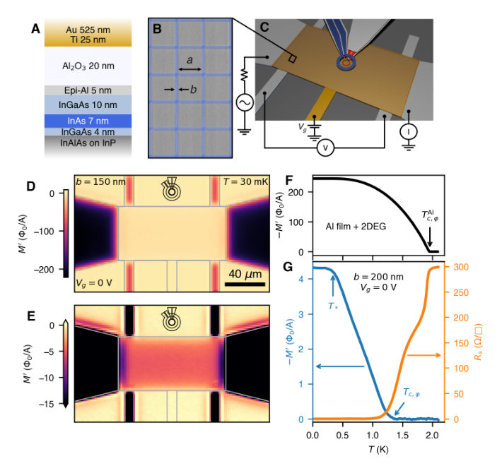
<figcaption class="paper-figure-caption"><b>Fig 1.</b> Figure 1: Measuring magnetic response and transport in gate-tuned InAs/Al Josephson junction arrays. (A) Schematic of the InAs/epitaxial Al heterostructure showing layer thickness and composition. The two-dimensional electron gas (2DEG) sits in the InAs layer. The epitaxial Al layer (Epi-Al) serves as current and voltage leads and creates superconductivity in the 2DEG through the proximity effect. (B) False color scanning electron micrograph of a test device after deposition of the Al2O3 gate dielectric. The Al layer (gray) is etched to create a pattern of square Al islands of size 𝑎× 𝑎separated by regions of exposed 2DEG (blue) of width 𝑏. Here, 𝑎= 1 𝜇m. (C) Schematic of the measurement...</figcaption>
</figure>
<figure class="paper-figure-card">
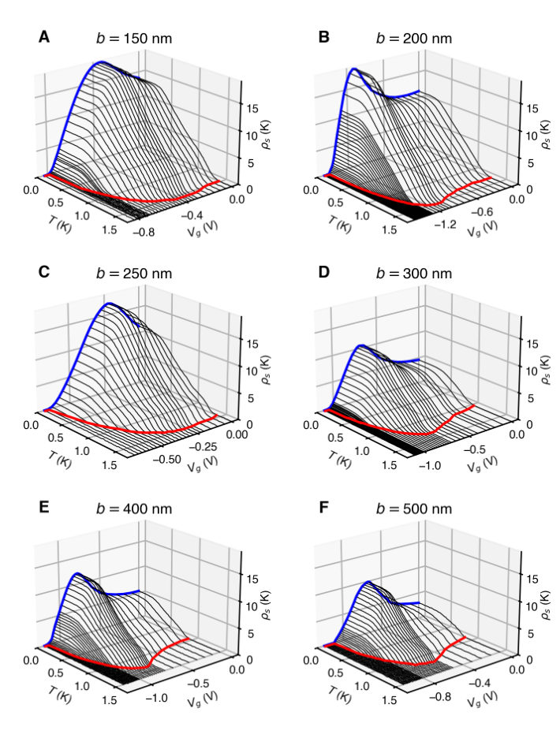
<figcaption class="paper-figure-caption"><b>Fig 2.</b> Figure 2: Gate voltage and temperature dependence of the phase stiffness 𝜌𝑠. In the limit of weak magnetic screening in two dimensions, 𝜌𝑠is proportional to the diamagnetic response −𝑀′. (A–F) 𝜌𝑠as a function of gate voltage 𝑉𝑔and temperature 𝑇for arrays with island spacing 𝑏= 150, 200, 250, 300, 400, and 500 nm. 𝜌𝑠(𝑇) has a similar shape at each value of gate voltage for each array. At low temperatures, 𝜌𝑠(𝑇) is nearly temperature-independent, approaching the value 𝜌𝑠0 ≡𝜌𝑠(𝑇→0). With increasing temperature, 𝜌𝑠(𝑇) decreases smoothly to zero at the diamagnetic critical temperature, 𝑇𝑐,𝜑. The gate voltage dependence of 𝜌𝑠0 and 𝑇𝑐,𝜑are shown in blue and red, respectively. Both peak at and...</figcaption>
</figure>
<figure class="paper-figure-card">
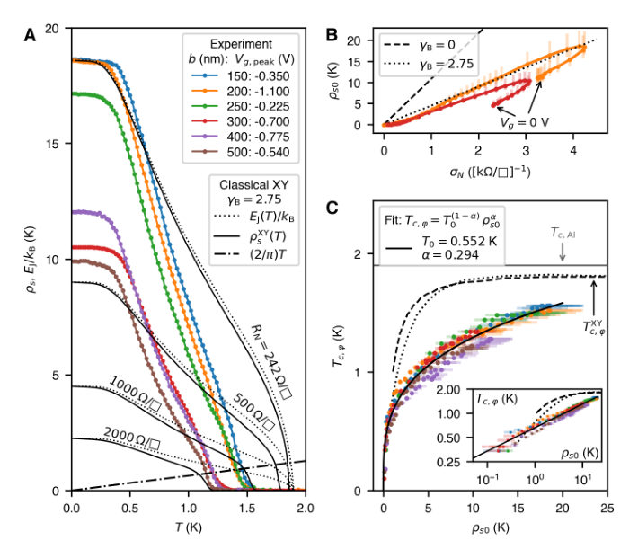
<figcaption class="paper-figure-caption"><b>Fig 3.</b> Figure 3: Incompatibility of the measured phase stiffness and critical temperatures with a purely thermal phase fluctuation scenario. (A) Measured phase stiffness at 𝑉𝑔,peak for each array (colored circles), calculated Josephson coupling 𝐸J/𝑘B (dotted black lines), and calculated classical XY phase stiffness 𝜌XY 𝑠 (solid black lines) vs. temperature, showing that the large suppression of 𝑇𝑐,𝜑relative to 𝑇𝑐,Al is inconsistent with a classical XY description. 𝐸J/𝑘B and 𝜌XY 𝑠 are calculated for plausible values of 𝛾B and 𝑅𝑁. (B) 𝜌𝑠0 vs. 𝜎𝑁= 𝑅−1 𝑁for 𝑏= 200 nm and 𝑏= 300 nm, compared to the 𝜌XY 𝑠0 predicted from Eq. 3 for 𝛾B = 0 (dashed) and 2.75 (dotted). 𝛾B = 2.75 is most consistent with the...</figcaption>
</figure>
<figure class="paper-figure-card">
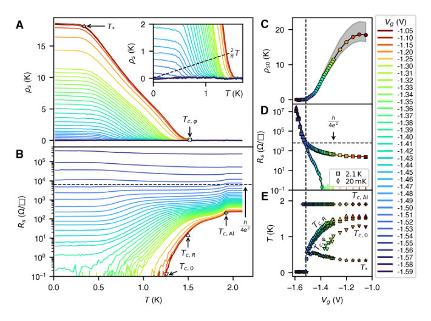
<figcaption class="paper-figure-caption"><b>Fig 4.</b> Figure 4: Phase stiffness and transport in the superconducting and anomalous metal regimes. (A) Phase stiffness 𝜌𝑠and (B) sheet resistance 𝑅𝑠vs. temperature 𝑇and gate voltage 𝑉𝑔for the array with 𝑏= 200 nm. (C) 𝜌𝑠0 vs. 𝑉𝑔. The shaded region indicates the systematic uncertainty in the linear coefficient relating 𝑀′ to 𝜌𝑠(Supplementary Text). (D) Normal state sheet resistance 𝑅𝑁 (□, 𝑇= 2.1 K) and low temperature sheet resistance 𝑅𝑠0 (⋄, 𝑇= 20 mK) vs. 𝑉𝑔. (E) Gate voltage dependence of the temperature scales indicated in (A, B). 𝑇𝑐,Al (+): critical temperature of the Al film, identified as the high temperature maximum in 𝜕𝑅𝑠/𝜕𝑇. 𝑇𝑐,𝑅(△): resistive transition of the array, identified as the...</figcaption>
</figure>
<figure class="paper-figure-card">
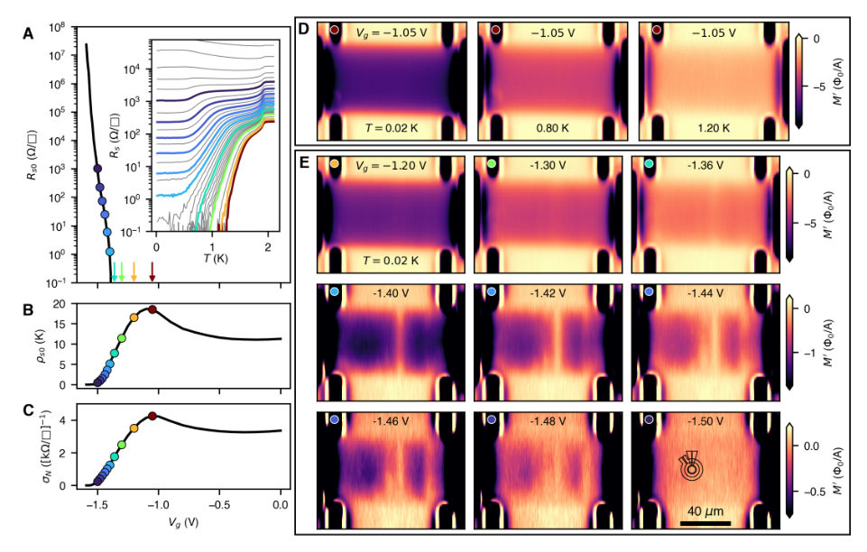
<figcaption class="paper-figure-caption"><b>Fig 5.</b> Figure 5: Emergence of anomalous metal transport and spatial inhomogeneity in the phase stiffness in the 𝑏= 200 nm array. Corresponding data for the other arrays can be found in the Supplementary Text. (A) Low-temperature (𝑇= 20 mK) sheet resistance 𝑅𝑠0 vs. 𝑉𝑔in the anomalous metal regime. Inset: temperature-dependent sheet resistance 𝑅𝑠(𝑇). The colored curves correspond to the colored dots and arrows. (B) 𝜌𝑠0 vs. 𝑉𝑔, showing a peak at 𝑉𝑔peak and the existence of measurable phase stiffness in the anomalous metal regime. (C) 𝜎𝑁vs. 𝑉𝑔, showing a similar peak near 𝑉𝑔,peak. (D) Scanning SQUID maps of the superfluid response 𝑀′ as a function of temperature at 𝑉𝑔= −1.05 V ≈𝑉𝑔,peak. At high...</figcaption>
</figure>
</div>

<p><strong>Summary.</strong> This paper experimentally investigates the destruction of superconductivity in 2D Josephson junction arrays by measuring local phase stiffness. The results show that superconductivity is suppressed by quantum fluctuations, not just thermal ones, and reveal that anomalous metallic behavior coexists with spatial disorder at low carrier densities. This provides key insights into the nature of quantum phase transitions in superconducting materials.</p>
<p><strong>Why it may be interesting.</strong> The work directly probes the quantum phase transition boundary in a controlled solid-state system, providing experimental evidence for quantum fluctuation effects beyond simple thermal models, which is relevant to understanding quantum critical points in many-body systems.</p>
<details>
<summary>Detailed structure</summary>
<p><strong>Main problem.</strong> The study investigates how thermal and quantum fluctuations destroy superconductivity in two-dimensional systems, and whether an intermediate 'anomalous metal state' represents a novel phase of matter.</p>
<p><strong>Main result.</strong> The superconducting critical temperature and phase stiffness are suppressed more strongly than expected from thermal fluctuations alone, indicating that quantum fluctuations play a crucial role. Furthermore, anomalous metal behavior emerges alongside large-scale spatial inhomogeneity at low carrier densities.</p>
<p><strong>Method.</strong> The research employs scanning SQUID microscopy to directly image the local phase stiffness ($
ho_s$) and measures electrical transport properties across Josephson junction arrays.</p>
<p><strong>Model / system.</strong> The physical system is a Josephson junction (JJ) array patterned on a high-mobility InAs two-dimensional electron gas (2DEG), serving as a model for a 2D superconductor. The analysis compares experimental measurements against theoretical models like the classical XY Hamiltonian.</p>
<p><strong>Key observables.</strong> Local phase stiffness ($
ho_s$), superconducting critical temperature ($T_{c,\varphi}$), sheet resistance ($R_s$), and the in-phase magnetic response ($M'$).</p>
<p><strong>Important parameters / regimes.</strong> Carrier density (tunable via gate voltage $V_g$), temperature ($T$), and Josephson coupling energy ($E_J$).</p>
<p><strong>Assumptions / limitations.</strong> The analysis compares results against predictions from classical XY models and assumes that the measured phase stiffness is a reliable thermodynamic measure of superconducting order.</p>
<p><strong>Figures summary.</strong> Figures show SQUID maps of diamagnetic response, temperature dependence of $
ho_s$ and $R_s$, and comparisons of measured phase stiffness against predictions from thermal fluctuation models.</p>
<p><strong>Paper structure.</strong> The paper systematically presents measurements of phase stiffness and resistance across varying carrier densities and temperatures, contrasting the observed suppression of superconductivity with predictions based solely on thermal fluctuations, and detailing the emergence of spatial inhomogeneity.</p>
</details>
<details>
<summary>Abstract</summary>
<p>Two-dimensional superconductors are model systems for thermal and quantum fluctuations. Key questions persist: whether existing models quantitatively describe the destruction of superconductivity, and whether an intermediate "anomalous metal state" represents a new phase of matter. We use scanning magnetic susceptibility to directly image the local phase stiffness, a thermodynamic measure of superconducting order, in gate-tunable Josephson junction arrays, a model two-dimensional superconductor. Across a broad range of carrier densities, we find that the superconducting critical temperature and phase stiffness are suppressed more strongly than expected from thermal fluctuations alone. At low carrier densities, we find that anomalous metal transport and large-scale spatial inhomogeneity emerge together. These results indicate that quantum fluctuations suppress superconductivity and that anomalous metal behavior emerges from phase slips in spatially disordered regions.</p>
</details>
<p><sub><a href="#top">↑ back to top</a></sub></p>

<p><a id="paper-2609.28903"></a></p>
<h3 id="conductance-of-silicon-nanotube-junctions-in-high-magnetic-fields"><a href="http://arxiv.org/abs/2609.28903v1">Conductance of silicon nanotube junctions in high magnetic fields</a></h3>
<p><strong>Authors:</strong> Teresa Kulka, Juan Alberto Canché-Martín, Irina V. Lebedeva, Jacek A. Majewski, Karolina Z. Milowska<br>
<strong>Type:</strong> theory · <strong>Category:</strong> other · <strong>PDF:</strong> <a href="https://arxiv.org/pdf/2609.28903v1">https://arxiv.org/pdf/2609.28903v1</a><br>
<strong>Analysis basis:</strong> full PDF text, analyzed in chunks
<strong>Topic relevance:</strong> <code>Keldysh / 2PI / non-Gaussian methods</code> <strong>2/5</strong> · <code>methods for driven-dissipative</code> <strong>2/5</strong> · <code>analog quantum simulation</code> <strong>1/5</strong></p>
<div class="figure-strip-hint">↔ Scroll figures horizontally</div>
<div class="paper-figures-scroll">
<figure class="paper-figure-card">
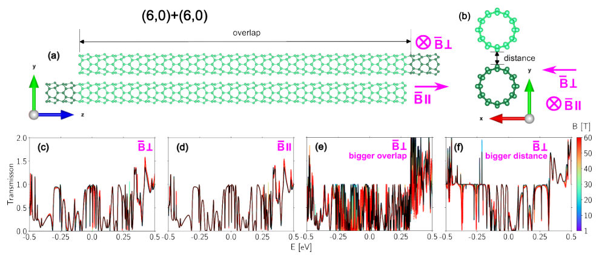
<figcaption class="paper-figure-caption"><b>Fig 1.</b> Figure 1: (a) Side and (b) cross-sectional views of the metallic (6, 0) + (6, 0) SiNT junction. Each tube (light green) is connected to a semi-infinite electrode of the same chirality (dark green). The overlap length and inter-tube distance are indicated, as well as the directions corresponding to perpendicular and parallel magnetic fields. (c-f) Transmission spectra of the (6, 0) + (6, 0) SiNT junction at zero magnetic field (black lines) with an overlap lengths and inter-tube distances (c,d) 13.26 nm (20 units) and 0.40 nm, (e) 53.04 nm (80 units) and 0.40 nm, (f) 13.26 nm (20 units) and 0.45 nm, respectively. Coloured lines correspond to (c,e,f) perpendicular and (d) parallel magnetic...</figcaption>
</figure>
<figure class="paper-figure-card">
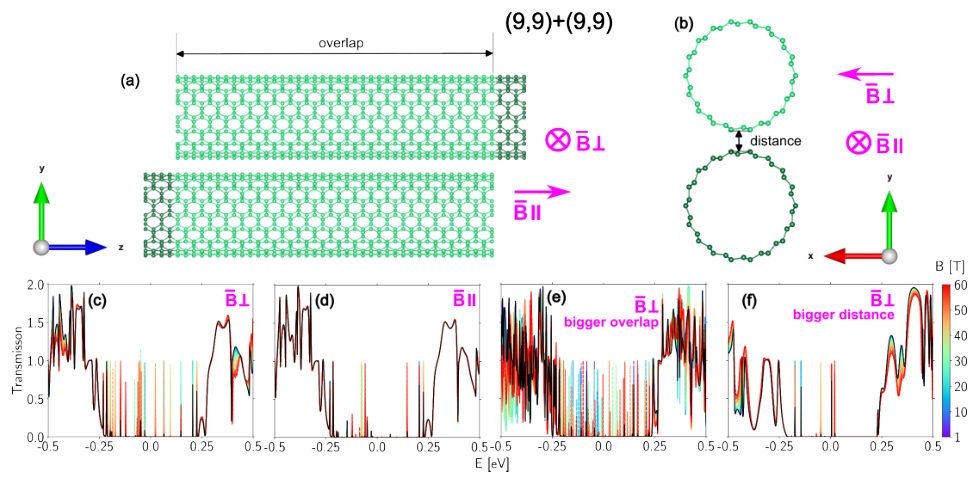
<figcaption class="paper-figure-caption"><b>Fig 2.</b> Figure 2: (a) Side and (b) cross-sectional views of the semiconducting (9, 9)+(9, 9) SiNT junction. Each tube (light green) is connected to a semi-infinite electrode of the same chirality (dark green). The overlap length and inter-tube distance are indicated, as well as the directions corresponding to perpendicular and parallel magnetic fields. (c-f) Transmission spectra of the (9, 9) + (9, 9) SiNT junction at zero magnetic field (black lines) with an overlap lengths and inter-tube distances (c,d) 7.69 nm (20 units) and 0.40 nm, (e) 30.76 nm (80 units) and 0.40 nm, (f) 7.69 nm (20 units) and 0.45 nm, respectively. Coloured lines correspond to (c,e,f) perpendicular and (d) parallel magnetic...</figcaption>
</figure>
</div>

<p><strong>Summary.</strong> This theoretical study characterizes the quantum electronic transport through silicon nanotube junctions under strong magnetic fields. Using a tight-binding model and NEGF formalism, the authors find that the magnetic response is highly sensitive to the field's orientation and junction geometry. The results establish unique magnetotransport signatures for SiNTs, distinguishing them from carbon nanotubes.</p>
<p><strong>Why it may be interesting.</strong> The detailed study of magnetotransport in semiconductor nanostructures provides a platform to test theoretical models of quantum confinement and orbital coupling in low-dimensional systems, which has parallels with superconducting or quantum wire physics.</p>
<details>
<summary>Detailed structure</summary>
<p><strong>Main problem.</strong> The study investigates coherent quantum transport through silicon nanotube (SiNT) junctions when subjected to high external magnetic fields.</p>
<p><strong>Main result.</strong> SiNT junctions exhibit irregular transmission oscillations, are highly sensitive to magnetic fields perpendicular to the tube axis, and show distinct field-dependent in-gap features in semiconducting junctions, differing significantly from carbon nanotube behavior.</p>
<p><strong>Method.</strong> The research employs a tight-binding (TB) model solved using the Non-Equilibrium Green's Function (NEGF) formalism, incorporating magnetic fields via the Peierls substitution.</p>
<p><strong>Model / system.</strong> The system consists of SiNT junctions, modeled using a four-orbital tight-binding Hamiltonian derived from DFT calculations. The junctions studied are metallic (6,0)+(6,0) and semiconducting (9,9)+(9,9) types.</p>
<p><strong>Key observables.</strong> Electronic transmission spectrum T(E), oscillation frequency, and the presence/absence of in-gap transmission features.</p>
<p><strong>Important parameters / regimes.</strong> Magnetic field strength up to 60 T, magnetic field direction (perpendicular vs. parallel to the axis), overlap length, and inter-tube distance.</p>
<p><strong>Assumptions / limitations.</strong> The Zeeman contribution is neglected, focusing solely on the orbital response to the magnetic field. TB parameters are fitted to initial DFT results.</p>
<p><strong>Figures summary.</strong> Figures show band structures comparing TB to DFT for both junction types, and transmission spectra illustrating the dependence on overlap length, inter-tube distance, and applied magnetic field strength.</p>
<p><strong>Paper structure.</strong> The paper follows a structure of establishing the physical model (DFT/TB parametrization), applying the NEGF formalism to calculate magnetotransport, and systematically analyzing the results based on junction geometry and field orientation.</p>
</details>
<details>
<summary>Abstract</summary>
<p>We investigate coherent quantum transport through silicon nanotube (SiNT) junctions in high magnetic fields up to 60 T using a tight-binding model combined with the non-equilibrium Green's function formalism, and magnetic field included via Peierls substitution. We consider junctions of metallic nanotubes (6,0)+(6,0) and semiconducting ones (9,9)+(9,9), and examine the effects of the overlap length, inter-tube distance, magnetic-field direction, and field strength on the electronic transmission. In contrast to carbon nanotube junctions, the SiNT systems exhibit irregular transmission oscillations and do not show the emergence of highly conductive gateway states. The transmission is substantially more sensitive to a magnetic field perpendicular to the nanotube axis than to a parallel field, while increasing the field strength progressively modifies the transmission spectrum. Increasing the overlap length results in more frequent transmission oscillations, whereas increasing the inter-tube distance modifies their positions and amplitudes without changing their overall character. Generally, similar trends are observed for both types of junctions, involving metallic and semiconducting nanotubes. However, in the junction of semiconducting nanotubes, one observes peculiar additional field-dependent in-gap transmission features. These results demonstrate that the magnetic-field response of SiNT junctions is strongly governed by their geometry and differs qualitatively from that of pristine carbon nanotube junctions.</p>
</details>
<p><sub><a href="#top">↑ back to top</a></sub></p>

<p><a id="paper-2609.29900"></a></p>
<h3 id="degenerate-turing-bifurcation-and-the-birth-of-localised-patterns-in-activator-inhibitor-systems"><a href="http://arxiv.org/abs/2609.29900v1">Degenerate Turing bifurcation and the birth of localised patterns in activator-inhibitor systems</a></h3>
<p><strong>Authors:</strong> Edgardo Villar-Sepúlveda, Alan R. Champneys<br>
<strong>Type:</strong> theory · <strong>Category:</strong> statistical mechanics · <strong>PDF:</strong> <a href="https://arxiv.org/pdf/2609.29900v1">https://arxiv.org/pdf/2609.29900v1</a><br>
<strong>Analysis basis:</strong> full PDF text, analyzed in chunks
<strong>Topic relevance:</strong> <code>driven-dissipative phase transition</code> <strong>2/5</strong> · <code>non-equilibrium universality</code> <strong>2/5</strong> · <code>Frenkel-Kontorova</code> <strong>1/5</strong></p>
<div class="figure-strip-hint">↔ Scroll figures horizontally</div>
<div class="paper-figures-scroll">
<figure class="paper-figure-card">
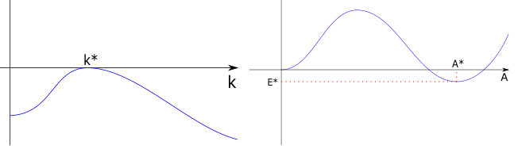
<figcaption class="paper-figure-caption"><b>Fig 1.</b> Fig. 1: (a) Dispersion relation at a Turing bifurcation. The graph shows the largest eigenvalue λ(k) of Ju f(P)−k2 D that touches the k-axis for some value k∗. (b) Graph of E(A) given by (2.15), for ε = 0, C3 &gt; 0, and C5 &lt; 0, showing minima at A = 0 and another positive value A = A∗. The Maxwell point occurs when E(A∗) = 0, where the two minima have the same energy.</figcaption>
</figure>
<figure class="paper-figure-card">
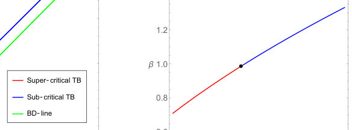
<figcaption class="paper-figure-caption"><b>Fig 2.</b> Fig. 2: Bifurcation diagrams associated with the Turing bifurcation in the general system (2.1) after the scaling of parameters, setting (α, η, δ) = (0, 0.9, 0.001) and</figcaption>
</figure>
<figure class="paper-figure-card">
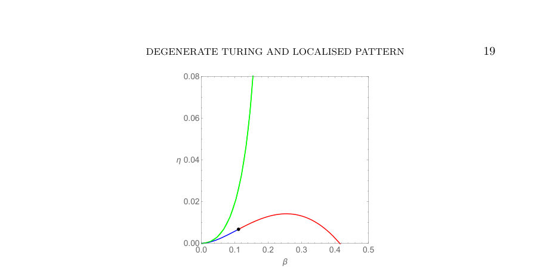
<figcaption class="paper-figure-caption"><b>Fig 3.</b> Fig. 3: Similar to Fig. 2 but for the Glycolysis and Selkov-Schnakenberg models when (α, δ) = (1, 0.001), in the (β, η)-plane.</figcaption>
</figure>
<figure class="paper-figure-card">
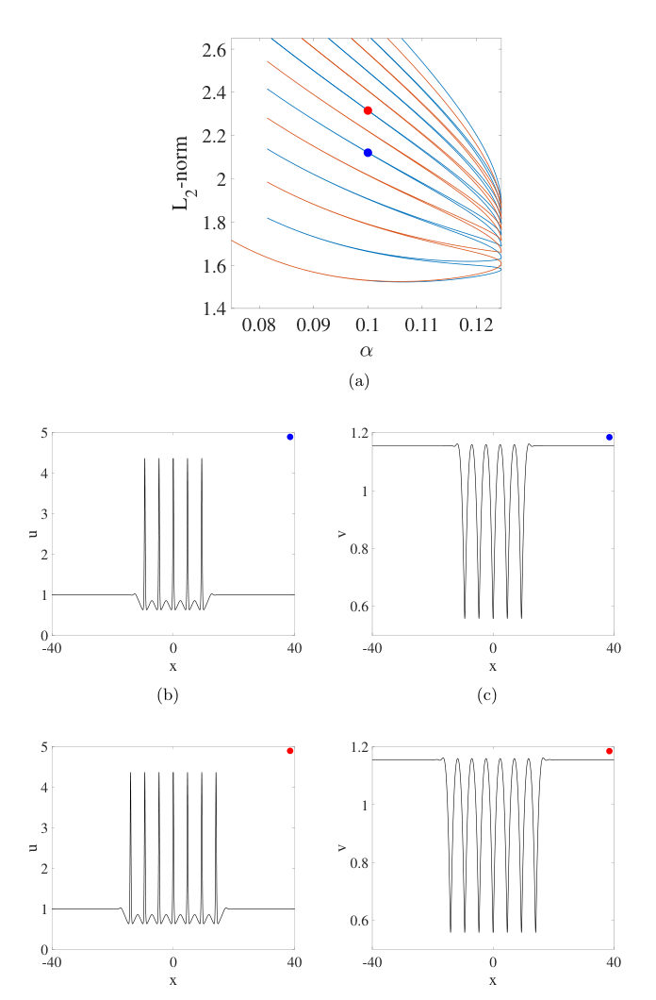
<figcaption class="paper-figure-caption"><b>Fig 4.</b> Fig. 5: (a) Homoclinic snaking for the Brusselator model on the subcritical side of the left-hand codimension-two point in Figure 4 for δ = 0.1 (b)-(e) Shapes of the variables u and v in space for points marked in (a).</figcaption>
</figure>
<figure class="paper-figure-card">
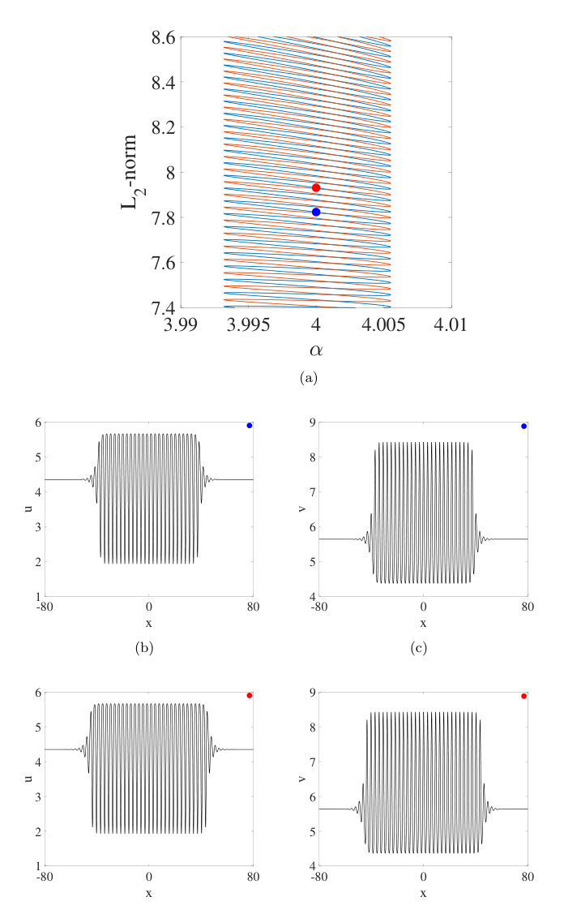
<figcaption class="paper-figure-caption"><b>Fig 5.</b> Fig. 6: Similar to Fig. 5 but for α-values beyond the right-hand degenerate Turing bifurcation in Fig. 4, for δ = 0.92.</figcaption>
</figure>
</div>

<p><strong>Summary.</strong> This theoretical paper rigorously analyzes the conditions for pattern formation in activator-inhibitor reaction-diffusion systems undergoing a Turing bifurcation. By developing high-order normal form theory, the authors determine that the bifurcation can be degenerate, leading to the formation of localized structures via a homoclinic snaking mechanism. This work provides deep mathematical insight into pattern selection in non-equilibrium physical models.</p>
<p><strong>Why it may be interesting.</strong> While focused on classical reaction-diffusion systems, the mathematical techniques used—analyzing pattern formation via bifurcation theory and normal forms—are foundational to understanding phase transitions and pattern selection in non-equilibrium statistical mechanics.</p>
<details>
<summary>Detailed structure</summary>
<p><strong>Main problem.</strong> The paper provides precise mathematical conditions for the existence and criticality of Turing bifurcations in general activator-inhibitor reaction-diffusion systems, focusing on the degenerate bifurcation leading to localized patterns.</p>
<p><strong>Main result.</strong> The analysis shows that depending on the parameter scaling ($\delta 	o 0$), the bifurcation can be subcritical or supercritical, leading to a codimension-two degenerate bifurcation characterized by the sign of a fifth-order normal form coefficient.</p>
<p><strong>Method.</strong> The authors employ weakly nonlinear perturbation theory, deriving and analyzing the normal form equations up to the fifth order to determine the stability and nature of the pattern formation transition.</p>
<p><strong>Model / system.</strong> The study concerns two-component activator-inhibitor reaction-diffusion equations, exemplified by generalized Schnakenberg and Brusselator models, defined on a one-dimensional infinite domain.</p>
<p><strong>Key observables.</strong> Turing bifurcation, localized patterns (homoclinic snaking), subcritical/supercritical nature of the bifurcation, and the Maxwell point.</p>
<p><strong>Important parameters / regimes.</strong> The diffusion ratio $\delta$, and the parameters governing the reaction kinetics ($\alpha, eta, \gamma$, etc.).</p>
<p><strong>Assumptions / limitations.</strong> The analysis relies on Taylor expansion and the assumption that the system can be reduced to an amplitude equation via multiple scales, particularly in the limit $\delta 	o 0$.</p>
<p><strong>Figures summary.</strong> Figure 1(a) illustrates the dispersion relation at a Turing bifurcation, while Figure 1(b) shows the energy functional $E(A)$ used to define the Maxwell point condition.</p>
<p><strong>Paper structure.</strong> The paper first establishes the general conditions for Turing instability (T1 &amp; T2), then derives the amplitude equation, and finally performs high-order normal form calculations to determine the coefficients governing the degenerate bifurcation and the emergence of localized structures.</p>
</details>
<details>
<summary>Abstract</summary>
<p>Precise conditions are provided for the existence and criticality of Turing bifurcations in a general class of activator-inhibitor reaction-diffusion equations on a one-dimensional infinite domain. The class includes generalised Schnakenberg and Brusselator models, as well as other models with cubic autocatalytic nonlinear terms. Previous numerical work suggests the existence of a bifurcation structure containing localised patterns due to the so-called homoclinic snaking mechanism. This paper provides explicit calculations to justify those results. Two distinct scalings of parameters that lead to tractable normal-form coefficients are considered in the limit that the diffusion ratio $δ\to 0$. First, under a small-parameter scaling, the Turing bifurcation is shown to be always subcritical. Second, a large-parameter scaling reveals the Turing bifurcation to be supercritical, leading, by continuity, to the existence of a codimension-two degenerate bifurcation. The sign of a 5th-order normal form coefficient is also computed, which is shown to have the correct sign for the local birth of homoclinic snaking. For the case of the Brusselator, two such codimension-two points can be found explicitly, as can the leading-order expression for the Maxwell point, in a parameter wedge about which localised patterns emerge. Numerical results are found to be consistent with the theory.</p>
</details>
<p><sub><a href="#top">↑ back to top</a></sub></p>

<p><a id="paper-2609.29459"></a></p>
<h3 id="library-of-carbon-nanotube-junctions-data-driven-insights-into-structure-magnetotransport-relationships"><a href="http://arxiv.org/abs/2609.29459v1">Library of carbon nanotube junctions: data-driven insights into structure-magnetotransport relationships</a></h3>
<p><strong>Authors:</strong> Juan Alberto Canché-Martín, Teresa Kulka, Jacek A. Majewski, Irina V. Lebedeva, Maciej Marchwiany, Karolina Z. Milowska<br>
<strong>Type:</strong> theory · <strong>Category:</strong> other · <strong>PDF:</strong> <a href="https://arxiv.org/pdf/2609.29459v1">https://arxiv.org/pdf/2609.29459v1</a><br>
<strong>Analysis basis:</strong> full PDF text, analyzed in chunks
<strong>Topic relevance:</strong> <code>Keldysh / 2PI / non-Gaussian methods</code> <strong>2/5</strong> · <code>methods for driven-dissipative</code> <strong>2/5</strong></p>
<div class="figure-strip-hint">↔ Scroll figures horizontally</div>
<div class="paper-figures-scroll">
<figure class="paper-figure-card">
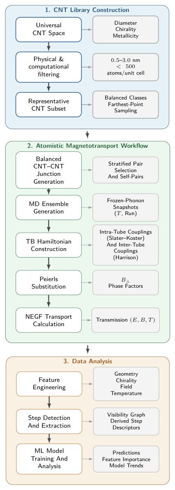
<figcaption class="paper-figure-caption"><b>Fig 1.</b> Fig. 1 Workflow for constructing the CNT–CNT junction library, com- puting the electronic transport response of the junctions under ex- ternal magnetic fields and at finite temperatures, and analysing the resulting transport descriptors using ML-based methods.</figcaption>
</figure>
<figure class="paper-figure-card">
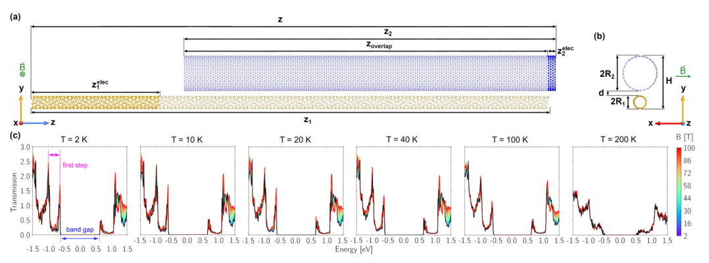
<figcaption class="paper-figure-caption"><b>Fig 2.</b> Fig. 2 Representative CNT-CNT junction. (a) Side and (b) cross-sectional views of the (8, 1) + (14, 14) junction used in the magnetotransport calculations. The semiconducting (8, 1) nanotube (yellow) is connected to a left semi-infinite electrode of the same chirality (dark yellow), whereas the metallic (14, 14) nanotube (blue) is connected to a right semi-infinite electrode of the same chirality (navy blue). The left and right nanotubes are described by the chiral vectors (n11, n12) and (n21, n22) and chiral angles θ1 and θ2, respectively; for the system shown, n11 = 8, n12 = 1, n21 = n22 = 14, θ1 = 5.82◦, and θ2 = 30◦. The nanotube radii R1 and R2, electrode lengths zelec 1 and zelec 2 ,...</figcaption>
</figure>
<figure class="paper-figure-card">
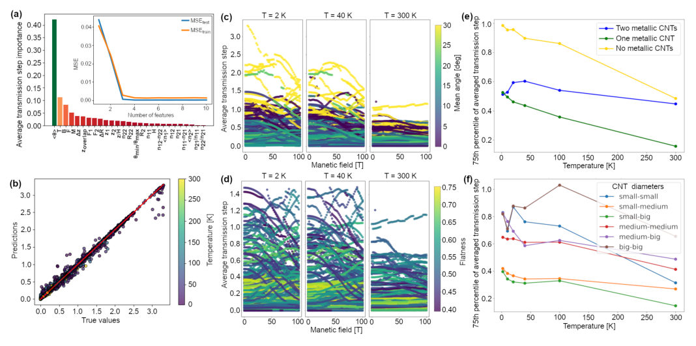
<figcaption class="paper-figure-caption"><b>Fig 3.</b> Fig. 3 (a) Random-forest analysis of the averaged first transmission-step value for all considered CNT–CNT junctions. Relative importance of the input descriptors, ordered by decreasing importance. The inset shows the training and test mean-square errors (MSEs) as functions of the number of features. (b) Model predictions versus the corresponding values obtained from the MD-TB-Peierls-NEGF calculations, colour- coded by temperature. The red diagonal denotes perfect agreement. (c,d) Averaged first transmission-step value as a function of perpendicular magnetic field at T = 2, 40, and 300 K, colour-coded by (c) the mean chiral angle of the nanotubes forming the junction and (d) the junction...</figcaption>
</figure>
<figure class="paper-figure-card">
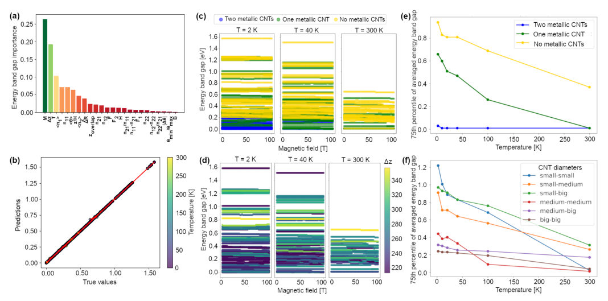
<figcaption class="paper-figure-caption"><b>Fig 4.</b> Fig. 4 (a) Random-forest analysis of the energy band gap for all considered CNT–CNT junctions. Relative importance of the input descriptors, ordered by decreasing importance. (b) Model predictions versus the corresponding values obtained from the MD–TB–Peierls–NEGF calcu- lations, colour-coded by temperature. The red diagonal denotes perfect agreement. (c,d) Energy band gap as a function of perpendicular magnetic field at T = 2, 40, and 300 K, colour-coded by (c) the number of metallic nanotubes forming the junction and (d) the difference in nanotube lengths, ∆z. (e,f) Temperature dependence of the 75th percentile of the energy band gap, grouped by (e) junction metallicity and (f) the...</figcaption>
</figure>
</div>

<p><strong>Summary.</strong> This work constructs a large library of carbon nanotube junctions and uses advanced computational methods to map out their magnetotransport behavior. It reveals that junction conductance is sensitive to the junction's average chiral angle, while the energy gap is dictated by the electronic nature (metallic vs. semiconducting) of the connected tubes. These findings establish crucial, statistically robust rules for designing CNT-based electronic networks.</p>
<p><strong>Why it may be interesting.</strong> The detailed, first-principles study of quantum transport in nanoscale junctions, particularly the separation of descriptors governing conductance versus gap size, provides valuable insights into mesoscopic physics relevant to quantum devices.</p>
<details>
<summary>Detailed structure</summary>
<p><strong>Main problem.</strong> The study investigates how the specific structure of individual carbon nanotube (CNT) junctions dictates their magnetotransport properties across a diverse population of junctions.</p>
<p><strong>Main result.</strong> The average transmission step is primarily governed by the mean chiral angle, while the junction energy gap depends predominantly on the metallic or semiconducting nature of the constituent CNTs.</p>
<p><strong>Method.</strong> The authors employed an automated, high-throughput workflow combining molecular dynamics, tight-binding theory, Peierls magnetic coupling, and non-equilibrium Green's functions, followed by machine-learning analysis.</p>
<p><strong>Model / system.</strong> The system consists of single-walled carbon nanotube (SWCNT)–SWCNT junctions, with a library of 146 junctions constructed spanning various structural and electronic types. The calculations utilize an empirical tight-binding model incorporating curvature and inter-nanotube coupling.</p>
<p><strong>Key observables.</strong> Averaged first transmission-step value, junction energy gap, and transport characteristics as a function of temperature and perpendicular magnetic field.</p>
<p><strong>Important parameters / regimes.</strong> Mean chiral angle, metallic/semiconducting character of constituent CNTs, temperature (up to 300 K), and perpendicular magnetic field strength.</p>
<p><strong>Assumptions / limitations.</strong> The analysis uses an empirical tight-binding model and makes approximations regarding orbital directions (radial approximation) and hopping integrals.</p>
<p><strong>Figures summary.</strong> Figures summarize the workflow, showing how transport properties (transmission spectra and band gaps) are calculated and analyzed across varying magnetic fields, temperatures, and junction metallicities.</p>
<p><strong>Paper structure.</strong> The paper first details the construction of the diverse junction library and the complex computational workflow. It then presents the analysis of key transport descriptors, establishing distinct structure-transport hierarchies, and concludes by providing statistically robust trends for network-scale modeling.</p>
</details>
<details>
<summary>Abstract</summary>
<p>Electronic transport in carbon nanotube (CNT) assemblies is controlled by a heterogeneous population of CNT--CNT junctions, yet most microscopic studies consider only a few representative systems. Here, we construct a library of 146 single-walled carbon nanotube (SWCNT)--SWCNT junctions spanning broad structural and electronic diversity and analyse their magnetotransport using an automated workflow combining molecular dynamics, tight-binding theory, Peierls magnetic coupling, and non-equilibrium Green's functions.The resulting transport data are subsequently analysed using machine-learning methods. Two complementary transport descriptors reveal distinct structure--transport hierarchies. The averaged first transmission-step value is governed primarily by the mean chiral angle of the two nanotubes forming a junction, whereas the energy gap of the junction depends predominantly on the metallic or semiconducting character of the constituent CNTs. Temperature generally suppresses the averaged transmission while reducing the extracted gap, whereas a perpendicular magnetic field affects transmission much more strongly than the gap. Signatures of interference-driven transport remain visible even at $300~\mathrm{K}$. Notably, semiconducting--semiconducting junctions retain the largest gaps but, once shifted into their conducting regime, can exhibit transmission comparable to or exceeding that of metallic junctions. These results establish statistically robust junction-level trends that can inform future network-scale models of CNT assemblies.</p>
</details>
<p><sub><a href="#top">↑ back to top</a></sub></p>

<p><a id="paper-2609.28924"></a></p>
<h3 id="quantum-gates-built-on-a-spin-qubit-and-a-kitaev-parity-qubit"><a href="http://arxiv.org/abs/2609.28924v1">Quantum Gates Built on a Spin Qubit and a Kitaev Parity Qubit</a></h3>
<p><strong>Authors:</strong> Zhi-Hai Liu, Jiang Zhang, Guilu Long, H. Q. Xu<br>
<strong>Type:</strong> theory · <strong>Category:</strong> quantum information and computing · <strong>PDF:</strong> <a href="https://arxiv.org/pdf/2609.28924v1">https://arxiv.org/pdf/2609.28924v1</a><br>
<strong>Analysis basis:</strong> full PDF text, analyzed in chunks
<strong>Topic relevance:</strong> <code>QC/QI experiment</code> <strong>2/5</strong> · <code>analog quantum simulation</code> <strong>1/5</strong> · <code>quantum measurements</code> <strong>1/5</strong></p>
<div class="figure-strip-hint">↔ Scroll figures horizontally</div>
<div class="paper-figures-scroll">
<figure class="paper-figure-card">
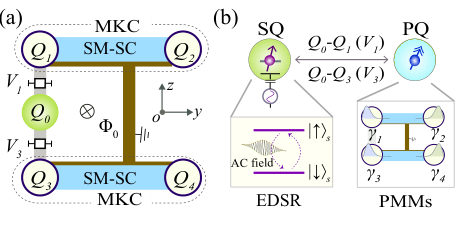
<figcaption class="paper-figure-caption"><b>Fig 1.</b> FIG. 1. (a) SM-SC hybrid QD array integrating a Kitaev parity qubit (PQ) and a spin qubit (SQ) in Q0. The PQ is built on the upper and lower MKCs (dashed boxes), with interchain superconducting phase bias controlled by the flux Φ0. Tunneling between Q0 and Q1,3 is tuned by V1,3. (b) Left: EDSR control of the SQ encoded by | ↑⟩s and | ↓⟩s. Right: dominant spatial distributions of the PMMs γj (j = 1, . . . , 4) encoding the PQ and the channels mediating PQ-SQ coupling.</figcaption>
</figure>
<figure class="paper-figure-card">
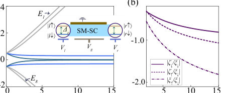
<figcaption class="paper-figure-caption"><b>Fig 2.</b> FIG. 2. (a) BdG spectrum Ej (Ej ≥Ej+1) versus ∆z for αso = 0.4π, ϵ0 = 51 µeV, and ∆z &lt; Σ0. Inset: MKC schematic, with Vl/r and Vg the plunger potentials and ∆z the Zeeman splitting between the states |l(r) ↑⟩and |l(r) ↓⟩. (b) log10 |ζ↓/ξ↓|, log10 |ζ↑/ξ↓|, and log10 |ξ↑/ξ↓| versus ∆z, ob- tained from the E4,5 eigenstates expanded in the Υ basis.</figcaption>
</figure>
<figure class="paper-figure-card">
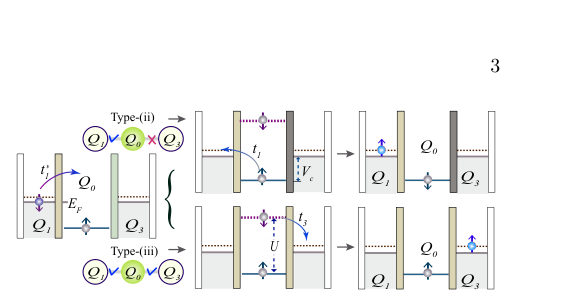
<figcaption class="paper-figure-caption"><b>Fig 3.</b> FIG. 3. Electron tunneling around the Q1-Q0-Q3 junction. In Type-(ii), a spin-down electron tunnels out of and back into Q1 via Q0, ending with a spin-up electron in Q1 by virtual tunneling. In Type-(iii), the electron is transferred from Q1 to Q3 through Q0’s high-energy level, leaving Q3 occupied by a spin-up electron. EF , Vc, and U denote the Fermi level and the confinement and Coulomb energies of Q0.</figcaption>
</figure>
<figure class="paper-figure-card">
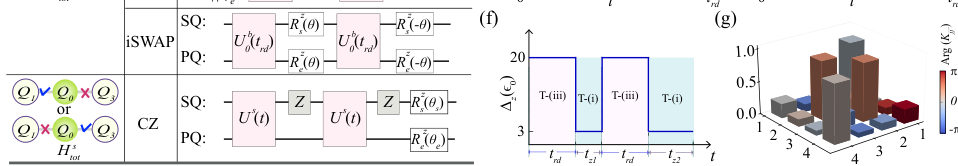
<figcaption class="paper-figure-caption"><b>Fig 4.</b> FIG. 4. (a) Coupling configurations, effective Hamiltonians, and quantum circuits used for PQ z- and n-axis rotations, PQ readout, and PQ-SQ iSWAP and CZ gates. (b) PQ rotations about the ˆz and ˆn axes. (c) PQ populations ρ00 and ρ11 during H and Y gates, with (tz1, tz2, tz3)Ωe = (π/2, −π/2, −π) and tnΩn = π (mod 4π). (d,e) Readout dynamics Pσ±(t) = |⟨σ±|Ψ(t)⟩|2</figcaption>
</figure>
</div>

<p><strong>Summary.</strong> This paper proposes a hybrid quantum computing platform coupling a Kitaev parity qubit to a spin qubit using Majorana fermions in a quantum dot array. By exploiting the spin-dependent nature of the Majorana modes, the authors derive tunable coupling mechanisms that enable the realization of universal quantum gates, demonstrating a path toward robust solid-state topological quantum computation.</p>
<p><strong>Why it may be interesting.</strong> This work directly addresses the challenge of integrating topological qubits (Majorana-based) with conventional solid-state qubits (spin qubits) for scalable quantum computation, which is a major focus in quantum information theory.</p>
<details>
<summary>Detailed structure</summary>
<p><strong>Main problem.</strong> The paper aims to establish a functional platform to couple a Kitaev parity qubit (PQ) with a quantum-dot spin qubit (SQ) by utilizing the intrinsic spin structure of poor-man's Majorana modes (PMMs).</p>
<p><strong>Main result.</strong> The system successfully supports universal control over the PQ, high-fidelity state readout, and the implementation of entangling gates (iSWAP, CZ) between the two qubits.</p>
<p><strong>Method.</strong> The analysis involves deriving effective coupling Hamiltonians based on the spin-dependent delocalization of PMMs and synthesizing quantum gates via controlled time evolution in different coupling regimes.</p>
<p><strong>Model / system.</strong> The physical system is an SM-SC hybrid quantum dot array integrating the PQ (built on PMMs in Minimal Kitaev Chains) and the SQ (encoded in Zeeman-split QD states). The coupling is mediated by tunneling channels between the sites.</p>
<p><strong>Key observables.</strong> Gate fidelities (e.g., CZ gate fidelity reaching 99%), coupling strengths (tens of MHz), and the spin-dependent delocalization coefficients.</p>
<p><strong>Important parameters / regimes.</strong> Interchain superconducting-phase bias ($\Phi_0$), Zeeman splitting ($\Delta_z$), and the tunneling barrier strengths ($V_1, V_3$).</p>
<p><strong>Assumptions / limitations.</strong> The analysis assumes the strong intradot Coulomb repulsion regime ($U$) and that the spinless description of MKCs is valid, which requires a large Zeeman splitting.</p>
<p><strong>Figures summary.</strong> Figure 1 schematically shows the QD array integrating PQ and SQ. Figure 2 illustrates the BdG spectrum and spin-dependent delocalization coefficients versus $\Delta_z$. Figure 4 provides a guide showing coupling configurations and quantum circuits for various gates.</p>
<p><strong>Paper structure.</strong> The paper first establishes the physical model and the role of PMM spin structure in coupling. It then analyzes the effective Hamiltonians across different coupling regimes (Type-(i), (ii), (iii)). Finally, it demonstrates the synthesis of single-qubit and two-qubit quantum gates using these derived Hamiltonians.</p>
</details>
<details>
<summary>Abstract</summary>
<p>Spin is typically traced out in the description of quantum-dot-based Kitaev chains to simplify the construction of Majorana fermions. Yet the intrinsic spin structure of poor-man's Majorana modes in minimal Kitaev chains under finite Zeeman fields offers a natural interface for the Kitaev parity qubit to interact with other spinful systems. Here, we establish such a platform to bridge the parity qubit and a quantum-dot spin qubit, with the effective coupling governed by the spin-dependent delocalization of the Majorana modes. Depending on whether the spin qubit is coupled to one or two chains constituting the parity qubit, the parity-spin coupling exhibits distinct forms: an anisotropic parity-conserving exchange interaction or a nontrivial exchange tensor tunable via the interchain superconducting-phase bias. Leveraging fast spin-qubit manipulation, we further demonstrate universal parity-qubit control, high-fidelity qubit-state readout, and entangling operations between the parity and spin qubits. These results turn the spinful structure of poor-man's Majoranas from a finite-field imperfection into a resource for hybrid quantum control.</p>
</details>
<p><sub><a href="#top">↑ back to top</a></sub></p>

<p><a id="paper-2609.28705"></a></p>
<h3 id="a-renormalized-ginzburg-landau-framework-for-dimensional-crossover-and-fluctuation-specific-heat-in-high-math921math-superconductors-in-a-magnetic-field"><a href="http://arxiv.org/abs/2609.28705v1">A Renormalized Ginzburg-Landau Framework for Dimensional Crossover and Fluctuation Specific Heat in High-$T_c$ Superconductors in a Magnetic Field</a></h3>
<p><strong>Authors:</strong> Roger Magloire Keumo Tsiaze, Jeremeie Edmond Danga, Cornelius Fai Lukong<br>
<strong>Type:</strong> theory · <strong>Category:</strong> statistical mechanics · <strong>PDF:</strong> <a href="https://arxiv.org/pdf/2609.28705v1">https://arxiv.org/pdf/2609.28705v1</a><br>
<strong>Analysis basis:</strong> full PDF text, analyzed in chunks
<strong>Topic relevance:</strong> <code>Keldysh / 2PI / non-Gaussian methods</code> <strong>2/5</strong> · <code>analog quantum simulation</code> <strong>1/5</strong></p>
<div class="figure-strip-hint">↔ Scroll figures horizontally</div>
<div class="paper-figures-scroll">
<figure class="paper-figure-card">

<figcaption class="paper-figure-caption"><b>Fig 1.</b> Figure 1. 2D fluctuation-specific heat at a fixed magnetic field (B = 2.85 T) as the fluctuation parameter η is varied: (a) η = 0; (b) η = 0.5; (c) η = 0.9 (ℏωc = 0.33 meV throughout). Application of a magnetic field suppresses superconductivity, thereby exposing the normal state and an extended regime of superconducting fluctuations. In contrast to the mean-field divergence anticipated in clean 2D systems for η = 0, the fluctuation-specific heat C2D fluc typically broadens without diverging and approaches the normal-state background at elevated temperatures.</figcaption>
</figure>
<figure class="paper-figure-card">
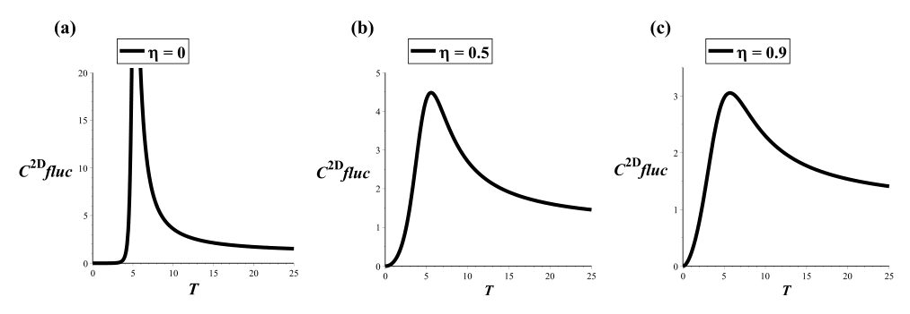
<figcaption class="paper-figure-caption"><b>Fig 2.</b> Figure 1 presents data for a fixed B = 2.85 T and varying values of η = 0, 0.5, 0.9. The η = 0 curve serves as a robust validation, reproducing the sharp, near-divergent mean-field-like spike at Tc0 = 5 K, consistent with the prediction of Eq. (5) when fluctuation coupling is absent. Introducing nonzero values of η eliminates the divergence and reduces the peak amplitude (η = 0.5 to η = 0.9). This figure provides the strongest support for the central claim that η, independent of the magnetic field, regularizes the divergence. Figure 2 presents data for a fixed η = 0.5, with ℏωc varied from 0.33 to 3 meV. The amplitude increases substantially with increasing field (approximately 13 to 35 to...</figcaption>
</figure>
<figure class="paper-figure-card">
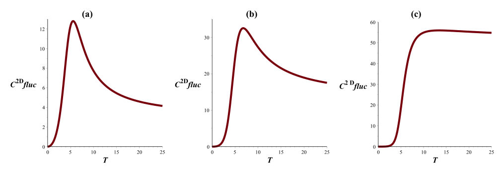
<figcaption class="paper-figure-caption"><b>Fig 3.</b> Figure 2. 2D fluctuation-specific heat at a fixed fluctuation parameter η = 0.5 as the magnetic field is varied: (a) ℏωc = 0.33 meV, B = 2.85 T; (b) ℏωc = 1.5 meV, B = 12.96 T; (c) ℏωc = 3 meV, B = 25.92 T. An external magnetic field breaks Cooper pairs, weakens superconductivity, and reveals thermodynamic fluctuation effects in 2D systems.</figcaption>
</figure>
<figure class="paper-figure-card">

<figcaption class="paper-figure-caption"><b>Fig 4.</b> Figure 3. 3D fluctuation-specific heat at a fixed magnetic field (B = 12.96 T) as the fluctuation parameter η varies: (a) η = 0; (b) η = 0.5; (c) η = 0.9 (ℏωc = 1.5 meV throughout). Unlike the mean-field divergence expected for η = 0 in clean 3D systems, the fluctuation-specific heat C3D fluc usually broadens and approaches the normal-state background at higher temperatures.</figcaption>
</figure>
<figure class="paper-figure-card">
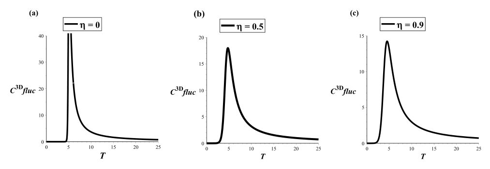
<figcaption class="paper-figure-caption"><b>Fig 5.</b> Figure 3 presents data for a fixed magnetic field of B = 12.96 T, with η varying from 0 to 0.9. This figure extends the analysis of Fig. 1 into three dimensions. A divergence is observed at η = 0. Direct comparison of Figs. 1 and 3 indicates that the attenuation effect associated with η ̸= 0 in three dimensions is proportionally weaker than in two dimensions. This result is consistent with the physical interpretation that one-dimensionally confined fluctuations, which govern the 3D case under a field via r(1, T), are less restrictive than the zero-dimensionally confined fluctuations characteristic of the 2D case. Figure 4 presents data for a fixed value of η = 0.5 with ℏωc varying from 0.33...</figcaption>
</figure>
</div>

<p><strong>Summary.</strong> This work develops a renormalized Ginzburg-Landau theory to study superconducting phase transitions in high-Tc superconductors under magnetic fields. By self-consistently renormalizing the theory, the authors regularize divergences and accurately predict the finite, rounded specific-heat anomaly. This framework successfully models the dimensional crossover induced by the magnetic field, providing quantitative agreement with experimental data from YBCO.</p>
<p><strong>Why it may be interesting.</strong> The rigorous treatment of fluctuation effects and dimensional crossover using renormalization techniques provides a powerful theoretical tool for understanding critical behavior in complex, layered quantum materials, which shares conceptual links with critical phenomena studied in AMO systems.</p>
<details>
<summary>Detailed structure</summary>
<p><strong>Main problem.</strong> The paper theoretically analyzes phase transitions and critical phenomena in high-temperature superconductors, specifically addressing the limitations of standard Ginzburg-Landau theory in low-dimensional systems and under magnetic fields.</p>
<p><strong>Main result.</strong> The renormalized framework successfully regularizes mean-field divergences, yielding a finite, dimensionality-dependent specific-heat anomaly that accurately captures the suppression and rounding of the mean-field discontinuity observed in cuprates.</p>
<p><strong>Method.</strong> The authors employ a renormalized Ginzburg-Landau framework, treating the quadratic coefficient self-consistently via Hartree-renormalization to account for fluctuation-loop corrections.</p>
<p><strong>Model / system.</strong> The system is high-temperature superconductors, modeled using an anisotropic-mass Ginzburg-Landau Hamiltonian. The theory incorporates minimal coupling to an external magnetic field, which quantizes fluctuations into Landau levels and effectively reduces the system's dimensionality.</p>
<p><strong>Key observables.</strong> Fluctuation-specific heat anomaly, critical Ginzburg region width, specific-heat peak position, and upper-critical-field crossover boundary.</p>
<p><strong>Important parameters / regimes.</strong> Dimensionality (D), magnetic field strength (B), and the fluctuation-coupling strength ($\eta$).</p>
<p><strong>Assumptions / limitations.</strong> The model focuses on orbital coupling, neglecting the Zeeman (spin-paramagnetic) pair-breaking term for simplicity. The analysis is performed in the long-wavelength, coarse-grained limit near $T_{c0}$.</p>
<p><strong>Figures summary.</strong> Figures illustrate the radial amplitude profile of an isolated vortex and the phase map showing the $2\pi$ phase winding characteristic of a singly-quantized vortex in 2D.</p>
<p><strong>Paper structure.</strong> The paper builds from the standard GL Hamiltonian to incorporate renormalization effects, then extends this to include magnetic field quantization, culminating in the calculation of specific heat and vortex structure.</p>
</details>
<details>
<summary>Abstract</summary>
<p>This paper presents a theoretical analysis of phase transitions and critical phenomena in high-temperature superconductors using a renormalized Ginzburg-Landau framework. Rather than assuming a conventional linear temperature dependence, we treat the quadratic coefficient as a self-consistent, Hartree-renormalized quantity determined by fluctuation-loop corrections. This renormalization regularizes mean-field divergences and yields a finite, dimensionality-dependent specific-heat anomaly near the transition. When an external magnetic field is applied, minimal coupling quantizes order-parameter fluctuations into discrete Landau levels, reducing the effective dimensionality via an effective spectral dimension. In this framework, the intrinsic fluctuation-coupling strength self-consistently determines the temperature width of the critical Ginzburg region, while the cyclotron energy of the quantized fluctuations uniquely establishes both the specific-heat peak position and the upper-critical-field crossover boundary. Comparison with $\text{YBa}_2\text{Cu}_3\text{O}_{7-δ}$ experimental data demonstrates that this approach captures the suppression of the sharp mean-field discontinuity and accurately reproduces the vortex-lattice topological structure under finite magnetic fields.</p>
</details>
<p><sub><a href="#top">↑ back to top</a></sub></p>

<p><a id="paper-2609.29026"></a></p>
<h3 id="geometry-induced-effective-tight-binding-hamiltonians-for-phononic-systems-mode-conversion-and-ssh-like-physics"><a href="http://arxiv.org/abs/2609.29026v1">Geometry-Induced Effective Tight-Binding Hamiltonians for Phononic Systems: Mode Conversion and SSH-Like Physics</a></h3>
<p><strong>Authors:</strong> José E. González, Carlos Ramírez<br>
<strong>Type:</strong> theory · <strong>Category:</strong> other · <strong>PDF:</strong> <a href="https://arxiv.org/pdf/2609.29026v1">https://arxiv.org/pdf/2609.29026v1</a><br>
<strong>Analysis basis:</strong> full PDF text, analyzed in chunks
<strong>Topic relevance:</strong> <code>analog quantum simulation</code> <strong>2/5</strong> · <code>Frenkel-Kontorova</code> <strong>1/5</strong></p>
<div class="figure-strip-hint">↔ Scroll figures horizontally</div>
<div class="paper-figures-scroll">
<figure class="paper-figure-card">
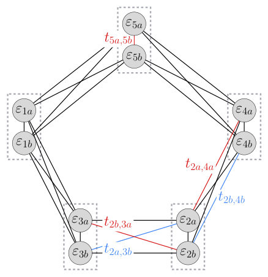
<figcaption class="paper-figure-caption"><b>Fig 1.</b> Figure 1 Graph representation of a multi-orbital tight-binding Hamiltonian defined on a pentagonal lattice. Each site is expanded into two internal degrees of freedom (a and b), represented by individual nodes with onsite energies εiα. In this example, hopping amplitudes are nonzero only between nearest-neighbor sites and include both intra- and inter-orbital couplings. Only a subset of hopping terms is explicitly labeled for clarity.</figcaption>
</figure>
<figure class="paper-figure-card">
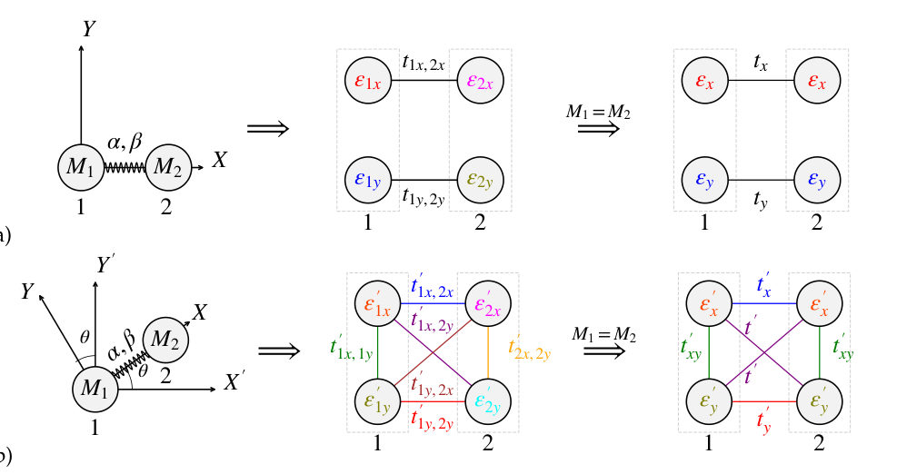
<figcaption class="paper-figure-caption"><b>Fig 2.</b> Figure 2 Equivalent tight-binding representation for (a) two coupled masses aligned with the coordinate axes and (b) the same system rotated by an angle θ, illustrating the emergence of inter-orbital couplings.</figcaption>
</figure>
<figure class="paper-figure-card">
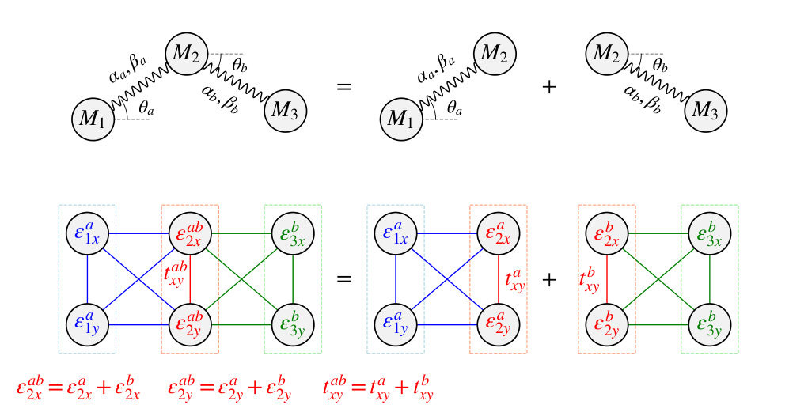
<figcaption class="paper-figure-caption"><b>Fig 3.</b> Figure 3 Schematic representation of a three-atom system with different atomic masses connected by different force constants, together with its building-block decomposition and the corresponding mapped tight-binding graph.</figcaption>
</figure>
<figure class="paper-figure-card">
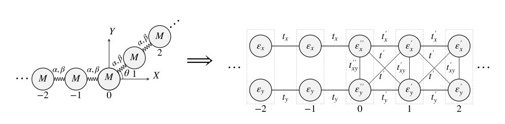
<figcaption class="paper-figure-caption"><b>Fig 4.</b> Figure 4 Monoatomic chain with an angular bend and its corresponding mapped multi-orbital tight-binding representation.</figcaption>
</figure>
<figure class="paper-figure-card">
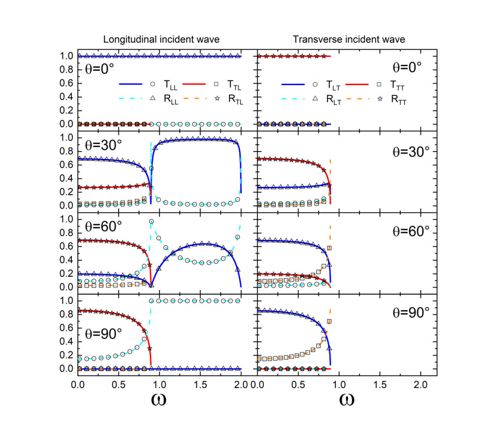
<figcaption class="paper-figure-caption"><b>Fig 5.</b> Figure 5 Transmission and reflection probabilities for a monoatomic chain with an angular bend as a function of frequency. Solid lines correspond to the analytical lattice-dynamics solution. Symbols indicate the results obtained from the recursive scattering-matrix calculation performed on the mapped tight-binding model.</figcaption>
</figure>
</div>

<p><strong>Summary.</strong> This work introduces a powerful theoretical framework that maps the vibrations of physical lattices onto effective multi-orbital tight-binding Hamiltonians. By doing so, it allows the use of electronic transport tools to study phononic phenomena like mode conversion and gap physics. The study demonstrates that geometric features, such as domain walls, can engineer robust, resonant transport channels within otherwise insulating frequency windows.</p>
<p><strong>Why it may be interesting.</strong> The ability to translate classical lattice dynamics into a quantum-mechanical, graph-based Hamiltonian framework provides powerful tools for analyzing wave transport and localization in condensed matter systems, bridging phononics and electronic transport theory.</p>
<details>
<summary>Detailed structure</summary>
<p><strong>Main problem.</strong> The paper develops a framework to map complex harmonic vibrational systems (phononics) onto the mathematical structure of multi-orbital tight-binding Hamiltonians.</p>
<p><strong>Main result.</strong> This mapping successfully describes geometry-induced phenomena, such as mode conversion at bends and the emergence of resonant transport channels via domain walls, mirroring SSH-like physics.</p>
<p><strong>Method.</strong> The method involves deriving effective onsite energies and hopping amplitudes from the system's force-constant matrix, allowing the application of electronic transport tools like the scattering matrix method.</p>
<p><strong>Model / system.</strong> The system is a lattice of point masses connected by elastic interactions, analyzed through its vibrational spectrum and scattering properties. The model is represented by a multi-orbital tight-binding Hamiltonian, $\hat{H}$.</p>
<p><strong>Key observables.</strong> Polarization-resolved transmission and reflection probabilities, spectral gaps, and the presence/absence of localized edge/domain-wall states.</p>
<p><strong>Important parameters / regimes.</strong> System geometry (e.g., bends, zigzag patterns, domain walls), bond angles, and frequency ($\omega$).</p>
<p><strong>Assumptions / limitations.</strong> The system dynamics can be accurately described by an effective multi-orbital tight-binding Hamiltonian derived from the harmonic approximation.</p>
<p><strong>Figures summary.</strong> Figures illustrate the graph representation of the Hamiltonian, compare scattering results for bent chains, and show transmission spectra demonstrating resonant peaks induced by domain walls in zigzag chains.</p>
<p><strong>Paper structure.</strong> The paper first establishes the mapping between phononic dynamics and tight-binding models, validates this mapping using a bend benchmark, then applies it to zigzag chains to study SSH-like physics and domain walls, and finally analyzes mode conversion using scattering matrices.</p>
</details>
<details>
<summary>Abstract</summary>
<p>We present a framework that maps harmonic vibrational systems onto effective multi-orbital tight-binding Hamiltonians, establishing a direct correspondence between phononic degrees of freedom and graph-based lattice models. Within this mapping, the Cartesian displacement components of each mass become internal orbitals, while elastic interactions generate effective onsite energies and hopping amplitudes determined by the geometry of the system. This representation enables the application of numerical and conceptual tools originally developed for electronic transport to the study of phononic systems. The method is first applied to a monoatomic chain containing an angular bend. For this benchmark system, analytical expressions for the polarization-resolved transmission and reflection probabilities are derived and compared against calculations performed using a recursive scattering-matrix method within the mapped tight-binding representation. Excellent agreement is obtained, validating the mapping and demonstrating its ability to describe geometry-induced mode conversion and the influence of evanescent states. We then investigate zigzag chains, where alternating bond orientations generate effective dimerized Hamiltonians reminiscent of the Su--Schrieffer--Heeger (SSH) model. Although the uniform zigzag chain develops a spectral gap, no localized edge states are observed. We show that modified boundary parameters generated by the phononic mapping suppress the edge-state formation expected from the ideal SSH picture. Introducing a geometric domain wall restores localized domain-wall states inside the gap, which give rise to resonant transmission channels across an otherwise insulating frequency window. The resonance energies remain robust against system-size variations and the corresponding transmission approaches unity.</p>
</details>
<p><sub><a href="#top">↑ back to top</a></sub></p>

<p><a id="paper-2609.28642"></a></p>
<h3 id="interaction-induced-flattening-of-optical-transition-quantum-geometry"><a href="http://arxiv.org/abs/2609.28642v1">Interaction induced flattening of optical transition quantum geometry</a></h3>
<p><strong>Authors:</strong> Xu Yang, Justin C. W. Song<br>
<strong>Type:</strong> theory · <strong>Category:</strong> other · <strong>PDF:</strong> <a href="https://arxiv.org/pdf/2609.28642v1">https://arxiv.org/pdf/2609.28642v1</a><br>
<strong>Analysis basis:</strong> full PDF text, analyzed in chunks
<strong>Topic relevance:</strong> <code>Keldysh / 2PI / non-Gaussian methods</code> <strong>2/5</strong> · <code>analog quantum simulation</code> <strong>1/5</strong></p>
<div class="figure-strip-hint">↔ Scroll figures horizontally</div>
<div class="paper-figures-scroll">
<figure class="paper-figure-card">
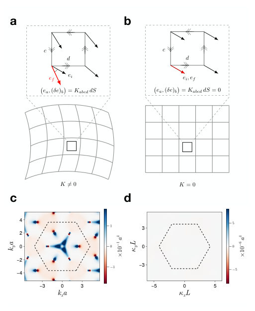
<figcaption class="paper-figure-caption"><b>Fig 1.</b> FIG. 1. Non-flat vs. interaction induced flat resonant quan- tum geometry. a. Parallel transport around an infinitesimal loop on a non-flat resonant transition manifold. The mis- match between the initial tangent vector ei and its parallel- transported counterpart ef around the square spanned by the c and d directions is encoded in δe = ef −ei and governed by the Hermitian curvature tensor. b. Parallel transport on a flat resonant transition manifold. The tangent vector is unchanged after transport, corresponding to K = 0. c. De- localized free optical transition Hermitian curvature tensor Kcv [x,y]xy (antisymmetrized in the first two indices, relevant to the photovoltaic Hall response) in...</figcaption>
</figure>
<figure class="paper-figure-card">
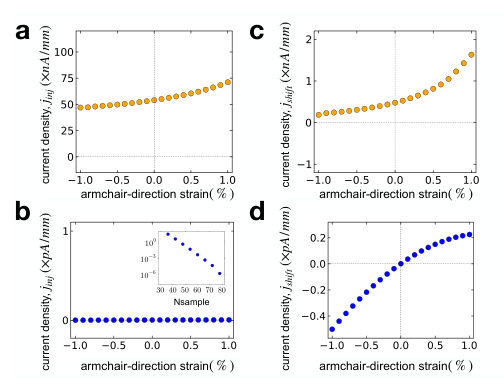
<figcaption class="paper-figure-caption"><b>Fig 2.</b> FIG. 2. Third-order injection and shift photoconductive cur- rents in monolayer MoS2. a. Third-order CPL injection Hall photoconductive current for delocalized free electronic opti- cal transitions. The response remains finite over the strain range and measures σ[x,y][x,y] inj , obtained by antisymmetrizing over the first two and last two indices. b. Excitonic CPL third-order injection Hall photoconductive current with pho- ton energy corresponding to the lowest exciton energy. The response is numerically zero on a 60 × 60 lattice. Inset: the finite size scaling of excitonic third order injection current at a fixed strain 0.5%, showing exponential decay. c. Third- order longitudinal shift...</figcaption>
</figure>
</div>

<p><strong>Summary.</strong> This work develops a geometric framework to describe optical transitions in interacting quantum materials, classifying excitations into localized (flat geometry) and delocalized (curved geometry) types. The key finding is that the flat geometry of excitons forces the third-order photoconductivity to zero, offering a powerful diagnostic tool for understanding many-body optical response.</p>
<p><strong>Why it may be interesting.</strong> The explicit connection drawn between geometric properties (flatness/curvature) and measurable nonlinear optical responses (photoconductivity) provides a powerful, unifying theoretical framework for understanding many-body optical phenomena.</p>
<details>
<summary>Detailed structure</summary>
<p><strong>Main problem.</strong> The paper investigates how electron-electron interactions modify the resonant quantum geometry of optical transitions and establishes a link between this geometry and nonlinear optical response.</p>
<p><strong>Main result.</strong> Interactions induce a rich structure in the quantum geometry, leading to localized excitations (excitons) possessing a uniform and flat geometry ($K=0$), which causes the third-order circular photoconductivity to vanish.</p>
<p><strong>Method.</strong> The analysis employs a many-body length gauge formulation to characterize the geometry using Hermitian metrics, connections, and curvature tensors, contrasting localized and delocalized excitation regimes.</p>
<p><strong>Model / system.</strong> The study models optical transitions in interacting many-body electronic materials, using concepts like particle-hole excitations and relative coordinate localization to parameterize the quantum geometry.</p>
<p><strong>Key observables.</strong> Hermitian curvature tensor ($K$), third-order circular photoconductivity, and the Berry curvature ($\Omega$).</p>
<p><strong>Important parameters / regimes.</strong> The distinction between localized (excitonic) and delocalized excitations; the limit of vanishing frequency ($\omega_\Sigma 	o 0$).</p>
<p><strong>Assumptions / limitations.</strong> The formulation relies on extending the length-gauge framework to interacting many-body systems, and localized excitations are assumed to exhibit relative coordinate localization.</p>
<p><strong>Figures summary.</strong> Figure 1 illustrates the difference between non-flat and interaction-induced flat resonant quantum geometry via parallel transport, and shows calculated Hermitian curvature tensors for delocalized versus excitonic transitions in MoS2.</p>
<p><strong>Paper structure.</strong> The paper systematically develops the geometry formulation, analyzes the constraints imposed by flux threading, derives expressions for nonlinear currents (injection and shift), and finally applies these results to specific material examples like MoS2.</p>
</details>
<details>
<summary>Abstract</summary>
<p>The Riemannian geometry of optical transition dipoles has become a useful picture for understanding linear and nonlinear optical response. Here we argue that the interacting quantum geometry of optical transitions possesses a rich structure and can be naturally delineated into two types: localized and delocalized particle-hole excitations. The former possess uniform quantum geometry with flat (vanishing) Hermitian curvature; the latter possess non-uniform quantum geometry with non-vanishing Hermitian curvature. As a striking example, we find that uniform quantum geometry can be produced by electron-hole interactions: even when composed from extended Bloch states in the particle and hole bands, we find excitons have uniform and flat quantum geometry. By developing a many-body length gauge formulation of nonlinear response, we find this uniform and flat excitonic quantum geometry zeros its third-order circular photoconductivity in non-magnetic materials in stark contrast to its non-interacting counterparts. Similarly, the zero Hermitian curvature of localized optical transitions locks their Hall response to that of the ground state. This demonstrates the rich landscape of many-body optical response controlled by an interacting quantum geometry.</p>
</details>
<p><sub><a href="#top">↑ back to top</a></sub></p>

<p><a id="paper-2609.28795"></a></p>
<h3 id="realization-of-very-high-mobility-inas-quantum-wells-on-inp-substrates-through-convex-inalas-graded-buffer-optimization"><a href="http://arxiv.org/abs/2609.28795v1">Realization of Very High Mobility InAs Quantum Wells on InP Substrates Through Convex InAlAs Graded Buffer Optimization</a></h3>
<p><strong>Authors:</strong> Tyler Lindemann, Rojila Ghimire, Alejandro Alcaraz Ramirez, Ahmad Azizimanesh, Sergei Gronin, Ray Kallaher, Michael J. Manfra<br>
<strong>Type:</strong> experiment · <strong>Category:</strong> other · <strong>PDF:</strong> <a href="https://arxiv.org/pdf/2609.28795v1">https://arxiv.org/pdf/2609.28795v1</a><br>
<strong>Analysis basis:</strong> full PDF text, analyzed in chunks
<strong>Topic relevance:</strong> <code>QC/QI experiment</code> <strong>2/5</strong> · <code>analog quantum simulation</code> <strong>1/5</strong></p>
<div class="figure-strip-hint">↔ Scroll figures horizontally</div>
<div class="paper-figures-scroll">
<figure class="paper-figure-card">
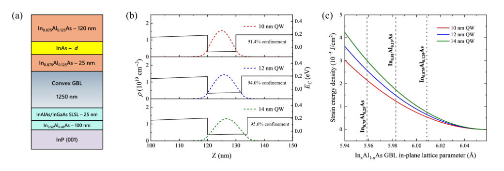
<figcaption class="paper-figure-caption"><b>Fig 1.</b> FIG. 1. (a) The layer stack of the heterostructure used for the three samples examined in this study. The quantum well thickness, d, was varied as described in Table I. (b) Self-consistent Schrödinger-Poisson calculations of the conduction band edge and electron charge distribution of the three samples examined in this study at n2DEG = 2.9 × 1011 cm−2. Z is the distance from top barrier-dielectric interface. (c) Strain energy density for different quantum well thicknesses as a function of the underlying GBL lattice parameter. The dashed vertical lines mark previously reported GBL terminal layer lattice parameters, assuming total relaxation [4, 5, 7]. The In0.875Al0.125As GBL used in this...</figcaption>
</figure>
<figure class="paper-figure-card">
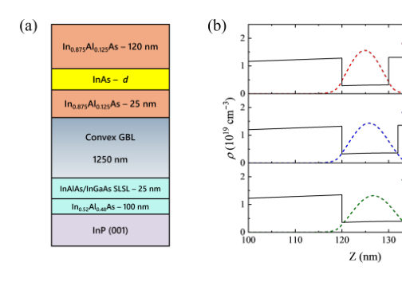
<figcaption class="paper-figure-caption"><b>Fig 2.</b> Fig. 1(c).</figcaption>
</figure>
<figure class="paper-figure-card">
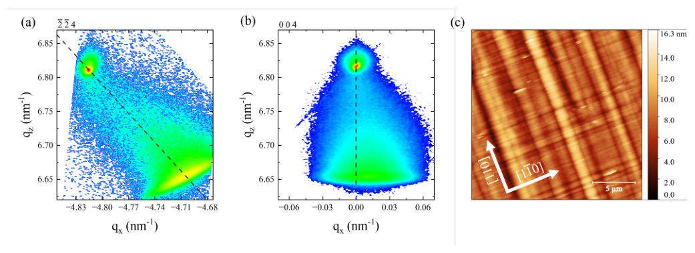
<figcaption class="paper-figure-caption"><b>Fig 3.</b> FIG. 2. Reciprocal space map of Sample A around the asymmetric (¯2¯24) reflection in (a) and the symmetric (004) reflection in (b). The diagonal dashed line in (a) is the line of total relaxation, while the vertical dashed line in (b) marks qx = 0. While the intensity maximum appear to track along the relaxation line in the (¯2¯24) reflection, one must correct for the macroscopic tilt shown by the deviation from qx = 0 in the (004) reflection. With this correction, a small amount of residual tensile strain is observed for the samples in this study. (c) A 20 × 20 µm2 AFM scan of Sample A, exhibiting the hallmark cross-hatch morphology of compositionally graded buffers.</figcaption>
</figure>
<figure class="paper-figure-card">
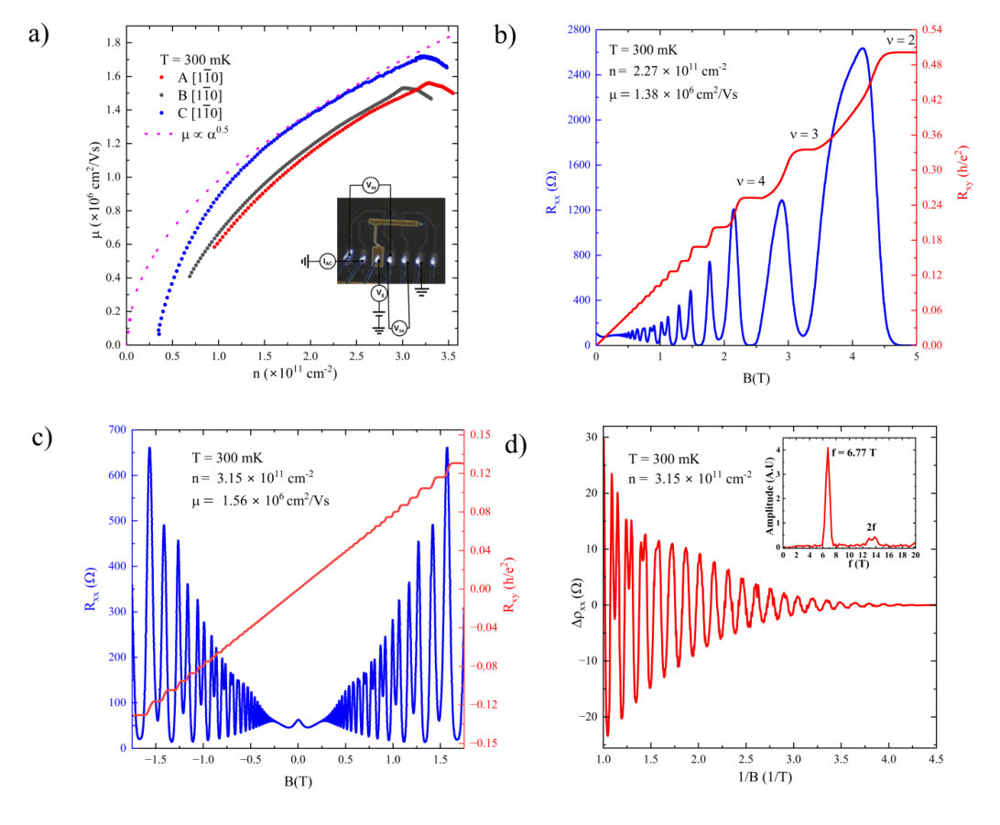
<figcaption class="paper-figure-caption"><b>Fig 4.</b> FIG. 3. (a) Mobility vs carrier density for Samples A, B and C measured along [1¯10] crystallographic direction. The dotted line represents the power law µ ∝nα, with α = 0.5. The peak mobility of 1.72 × 106 cm2 V−1 s−1 is measured in Sample C (14 nm quantum well) at n = 3.24 × 1011 cm−2. Inset: An optical microscope image of one of the fabricated Hall bars, annotated with a schematic of the measurement circuit. (b) Magnetotransport for the 14 nm wide quantum well at n = 2.27 × 1011 cm−2</figcaption>
</figure>
</div>

<p><strong>Summary.</strong> This work reports on the successful realization of high-quality InAs quantum wells on InP substrates by optimizing the metamorphic buffer layer using a convex grading profile. This advanced growth technique significantly reduces structural disorder, leading to the highest reported electron mobility for this material system. The achievement is vital for advancing research into topological superconductivity in semiconductor-superconductor hybrids.</p>
<p><strong>Why it may be interesting.</strong> While focused on semiconductor device physics, the ability to engineer material interfaces with extremely low disorder and high carrier mobility is foundational for building quantum devices, including those for topological quantum computation.</p>
<details>
<summary>Detailed structure</summary>
<p><strong>Main problem.</strong> The primary challenge is achieving very high electron mobility in InAs quantum wells (2DEGs) grown on InP substrates, which is critical for exploring topological superconductivity.</p>
<p><strong>Main result.</strong> The authors achieved a record low-temperature electron mobility exceeding $1.7 	imes 10^6 	ext{ cm}^2 	ext{ V}^{-1} 	ext{ s}^{-1}$ in a 14 nm InAs QW by optimizing the buffer layer.</p>
<p><strong>Method.</strong> They utilized Molecular Beam Epitaxy (MBE) to grow the heterostructures, employing a convex compositional grading profile in an InAlAs metamorphic buffer.</p>
<p><strong>Model / system.</strong> The physical system is a semiconductor heterostructure consisting of InAs quantum wells grown on InP substrates, separated by a metamorphic InAlAs graded buffer. The structure is designed to minimize disorder and strain effects.</p>
<p><strong>Key observables.</strong> Low-temperature electron mobility ($\mu$), 2DEG density ($n_{2DEG}$), lattice parameters, and strain energy density.</p>
<p><strong>Important parameters / regimes.</strong> QW thickness ($>10$ nm), 2DEG density ($\leq 3.2 	imes 10^{11} 	ext{ cm}^{-2}$), and the convex grading profile parameters.</p>
<p><strong>Assumptions / limitations.</strong> The convex grading profile successfully minimizes misfit and threading dislocations compared to previous linear grading methods.</p>
<p><strong>Figures summary.</strong> Figures show the layer stack, Schrödinger-Poisson modeling of confinement, strain energy density vs. buffer parameters, and RSM data confirming strain characterization.</p>
<p><strong>Paper structure.</strong> The paper details the structural optimization using the convex grading buffer, followed by characterization of structural and electrical transport properties, culminating in the measurement of record-high electron mobility.</p>
</details>
<details>
<summary>Abstract</summary>
<p>Due to strong spin-orbit coupling, large Landé $g$-factor, and a highly transparent interface, the two-dimensional electron gas (2DEG) in InAs quantum wells provides an ideal platform for the exploration of topological superconductivity in hybrid semiconductor-superconductor heterostructures. Reduction of disorder in the semiconductor remains a primary challenge to the disambiguation of subtle interaction effects. Here we demonstrate very high mobility InAs 2DEGs grown on insulating InP substrates. Utilizing a convex compositional grading profile in an InAlAs metamorphic buffer we demonstrate InAs quantum wells with thickness greater than 10 nm without need of Ga-containing cladding layers. We examine structural and electrical transport properties of these heterostructures. Advances in the design of the metamorphic InAlAs buffer result in low-temperature electron mobility exceeding $1.7\times10^6$ cm$^2$ V$^{-1}$ s$^{-1}$ at 2DEG density $\leq3.2\times10^{11}$ cm$^{-2}$, the highest value yet reported for this material system.</p>
</details>
<p><sub><a href="#top">↑ back to top</a></sub></p>

<p><a id="paper-2609.29857"></a></p>
<h3 id="spin-polarized-magnetic-metal-electrodes-for-magnetic-tunnel-junctions"><a href="http://arxiv.org/abs/2609.29857v1">Spin-Polarized Magnetic Metal Electrodes for Magnetic Tunnel Junctions</a></h3>
<p><strong>Authors:</strong> Zhiyuan Duan, Peixin Qin, Li Liu, Guojian Zhao, Sixu Jiang, Xiaoyang Tan, Jingyu Li, Xiaoning Wang, Ziang Meng, Zhiqi Liu<br>
<strong>Type:</strong> theory · <strong>Category:</strong> other · <strong>PDF:</strong> <a href="https://arxiv.org/pdf/2609.29857v1">https://arxiv.org/pdf/2609.29857v1</a><br>
<strong>Analysis basis:</strong> full PDF text, analyzed in chunks
<strong>Topic relevance:</strong> <code>Keldysh / 2PI / non-Gaussian methods</code> <strong>1/5</strong> · <code>analog quantum simulation</code> <strong>1/5</strong> · <code>quantum measurements</code> <strong>1/5</strong></p>
<div class="figure-strip-hint">↔ Scroll figures horizontally</div>
<div class="paper-figures-scroll">
<figure class="paper-figure-card">

<figcaption class="paper-figure-caption"><b>Fig 1.</b> Figure 1. Schematic overview of ferromagnetic, collinear antiferromagnetic, noncollinear</figcaption>
</figure>
<figure class="paper-figure-card">
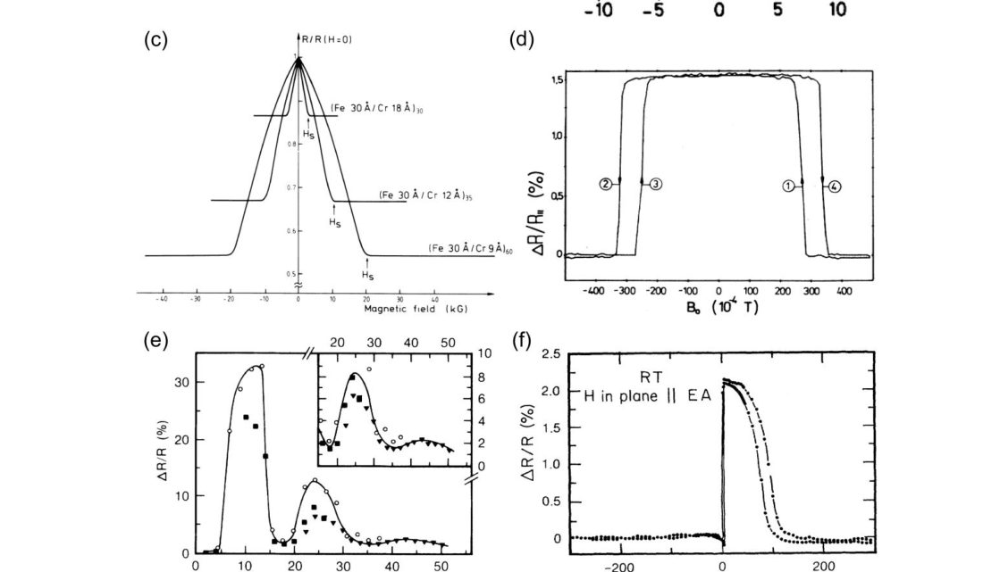
<figcaption class="paper-figure-caption"><b>Fig 2.</b> Figure 2. (a) Schematic illustration of a Josephson junction. (b) Bias-dependent conductance</figcaption>
</figure>
<figure class="paper-figure-card">
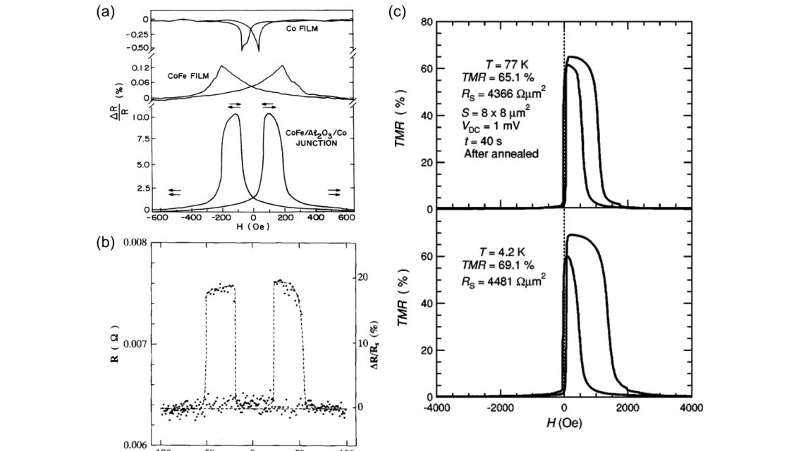
<figcaption class="paper-figure-caption"><b>Fig 3.</b> Figure 3. (a) Magnetoresistance of single Co and CoFe films compared with the much larger</figcaption>
</figure>
<figure class="paper-figure-card">
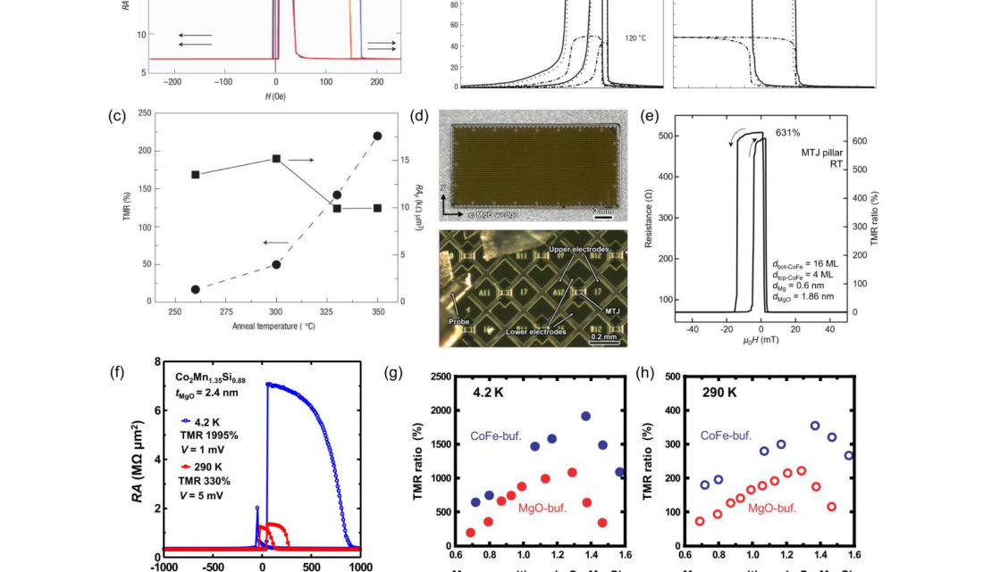
<figcaption class="paper-figure-caption"><b>Fig 4.</b> Figure 4. (a) Resistance-area product as a function of magnetic field for an epitaxial</figcaption>
</figure>
<figure class="paper-figure-card">
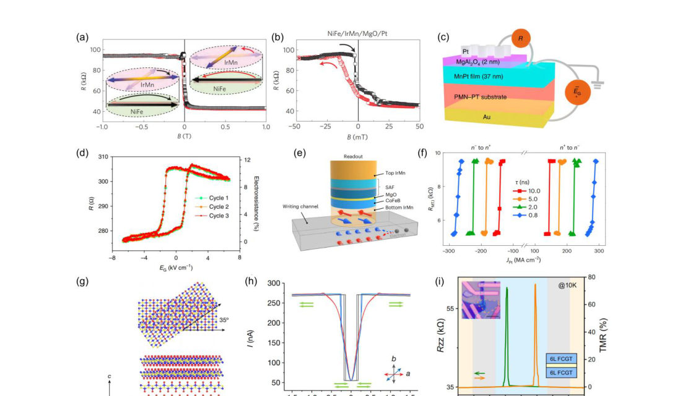
<figcaption class="paper-figure-caption"><b>Fig 5.</b> Figure 5. (a) Magnetic-field dependence of the resistance of a NiFe/IrMn/MgO/Pt junction</figcaption>
</figure>
</div>

<p><strong>Summary.</strong> This perspective review examines the physics governing spin-selective tunneling in MTJs, arguing that polarization is not a bulk property but a complex, symmetry-dependent transport feature. It compares traditional ferromagnets with advanced materials like antiferromagnets and altermagnets. The work concludes that future spintronic progress requires engineering these unconventional spin polarizations into robust, addressable functionalities.</p>
<p><strong>Why it may be interesting.</strong> While focused on condensed matter magnetism, the emphasis on symmetry filtering and momentum-resolved transport properties echoes concepts used in understanding quantum transport in mesoscopic systems, which is relevant to open quantum systems.</p>
<details>
<summary>Detailed structure</summary>
<p><strong>Main problem.</strong> The paper aims to advance the understanding of spin-selective tunneling in Magnetic Tunnel Junctions (MTJs) beyond simply maximizing the Tunneling Magnetoresistance (TMR). It seeks to establish a comprehensive design principle for electrode polarization.</p>
<p><strong>Main result.</strong> Effective electrode polarization is not a simple scalar bulk quantity but rather a complex transport property resolved by momentum, orbital symmetry, and the specific interface structure.</p>
<p><strong>Method.</strong> The analysis involves comparing theoretical models (Jullière vs. symmetry-filtered tunneling) with experimental observations across various magnetic material classes.</p>
<p><strong>Model / system.</strong> The core system is the Magnetic Tunnel Junction (MTJ), comprising two magnetic electrodes separated by a tunneling barrier. The discussion spans conventional ferromagnets, half-metals, antiferromagnets (AFMs), and altermagnets.</p>
<p><strong>Key observables.</strong> Tunneling Magnetoresistance (TMR), effective transport polarization ($P_T$), and the degree of spin-splitting in electronic states.</p>
<p><strong>Important parameters / regimes.</strong> Momentum ($\mathbf{k}_{||}$), orbital symmetry, interface termination, and magnetic order (collinear vs. noncollinear).</p>
<p><strong>Assumptions / limitations.</strong> The analysis builds upon the limitations of the simple Jullière model and highlights the necessity of considering quantum mechanical tunneling matrix elements.</p>
<p><strong>Figures summary.</strong> Not specified, but the notes reference comparisons between TMR in amorphous vs. crystalline barriers, and the role of specific electronic states ($\Delta_1$ state in MgO).</p>
<p><strong>Paper structure.</strong> The paper progresses by reviewing the historical development of MTJ physics, contrasting simple bulk polarization models with advanced quantum-mechanical descriptions, and finally surveying emerging materials like AFMs and altermagnets for future device design.</p>
</details>
<details>
<summary>Abstract</summary>
<p>Magnetic tunnel junctions are foundational components of spintronic memory, sensing, and computing, and their performance depends critically on the magnetic metallic electrodes. This Perspective examines electrode materials through the lens of magnetic order and the distinct microscopic mechanisms that generate spin-selective tunneling. Conventional ferromagnets, including CoFeB and half-metallic Heusler alloys, support exchange-split electronic states and symmetry-filtered tunneling, whereas compensated collinear and noncollinear antiferromagnets exploit sublattice selectivity, spin-orbit anisotropy, vector spin textures, and magnetic multipoles. Altermagnets provide a collinear, zero-net-moment route based on symmetry-allowed momentum-dependent spin splitting. Across these material classes, we compare the origins of tunneling polarization, the roles of barrier evanescent states and interface termination, and strategies for electrically writing and reading the relevant magnetic order. This comparison reveals a broader design principle: effective electrode polarization is not a scalar bulk quantity, but a momentum-, orbital-, symmetry-, and interface-resolved transport property. Beyond the pursuit of ever larger tunneling magnetoresistance, future progress will depend on converting the unconventional spin polarization of emerging magnetic metals into electrically addressable, thermally robust, and reproducible tunneling functionality at realistic interfaces.</p>
</details>
<p><sub><a href="#top">↑ back to top</a></sub></p>

<p><a id="paper-2609.30016"></a></p>
<h3 id="topological-insulator-heterophase-gate-stacks-for-transistor-electrostatics"><a href="http://arxiv.org/abs/2609.30016v1">Topological-Insulator Heterophase Gate Stacks for Transistor Electrostatics</a></h3>
<p><strong>Authors:</strong> Minuk Song, Jiwan Kim, MD Gius Uddin, Wonseok Kim, Jihun Park, Han Uk Lee, Dong Won Jeon, Dohyung Lee, Lide Yao, Jouko Lahtinen, Gyunghyun Jang, Soohyun Min, Yonas Tsegaye Megra, Xiaoqi Cui, Seungwoo Choi, Yunyun Dai, Sang Hoon Chae, Keun Su Kim, Dong-Ho Kang, Hyeon-Jin Shin, Wooseok Song, Seth Ariel Tongay, Chul-Ho Lee, Manish Chhowalla, Sung Beom Cho, Zhipei Sun, Kibog Park, Hoon Hahn Yoon<br>
<strong>Type:</strong> both · <strong>Category:</strong> other · <strong>PDF:</strong> <a href="https://arxiv.org/pdf/2609.30016v1">https://arxiv.org/pdf/2609.30016v1</a><br>
<strong>Analysis basis:</strong> full PDF text, analyzed in chunks
<strong>Topic relevance:</strong> <code>analog quantum simulation</code> <strong>1/5</strong> · <code>driven-dissipative phase transition</code> <strong>1/5</strong> · <code>quantum measurements</code> <strong>1/5</strong></p>
<div class="figure-strip-hint">↔ Scroll figures horizontally</div>
<div class="paper-figures-scroll">
<figure class="paper-figure-card">
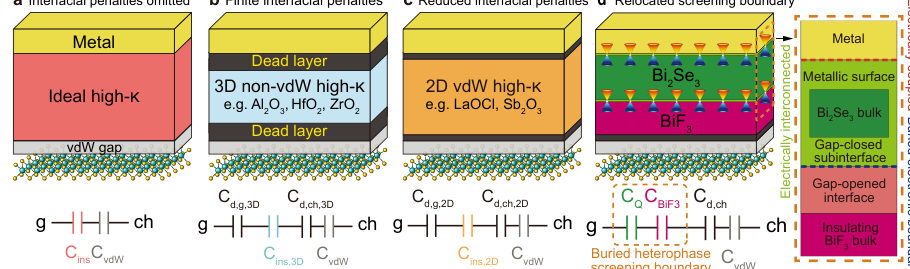
<figcaption class="paper-figure-caption"><b>Fig 1.</b> Fig. 1 Screening-boundary relocation in a topological-insulator heterophase gate stack (TIHGS). a–d, Schematics and equivalent-capacitance models for gate-dielectric structures with a two-dimensional (2D) van der Waals (vdW) channel; the bias-dependent semiconductor-body capacitance is omitted. a, Idealized gate stack without finite interfacial-capacitance penalties. b, Conventional three-dimensional (3D) non-vdW high-κ dielectric with gate-side and channel-side interfacial capacitances (Cd,g,3D and Cd,ch,3D), vdW-gap capacitance (CvdW), and insulator capacitance (Cins,3D). c, 2D vdW high-κ dielectric retaining finite gate-side and channel-side interfacial contributions (Cd,g,2D and...</figcaption>
</figure>
<figure class="paper-figure-card">
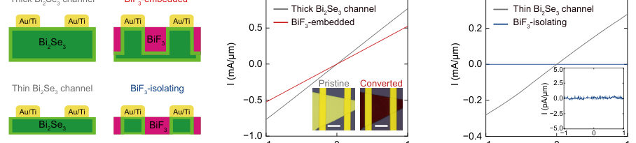
<figcaption class="paper-figure-caption"><b>Fig 2.</b> Fig. 2 Electrical isolation and buried conduction in the topological-insulator heterophase gate stack. a–c, Device schematics (top) and corresponding current–voltage (I–V ) characteristics (bottom) of a, pristine Bi2Se3; b, SF6- converted Bi2Se3; and c, a lateral pristine/converted heterojunction. The converted region suppresses conduction from the mA µm−1 to the pA µm−1 range. Scale bar in a, 10 µm. d, Schematics illustrating partial surface conversion of a Bi2Se3 flake thicker than the conversion depth and complete conversion of a thinner flake. e, I–V characteristics of a thick Bi2Se3 channel before and after partial surface conversion, showing persistent conduction through the residual...</figcaption>
</figure>
<figure class="paper-figure-card">
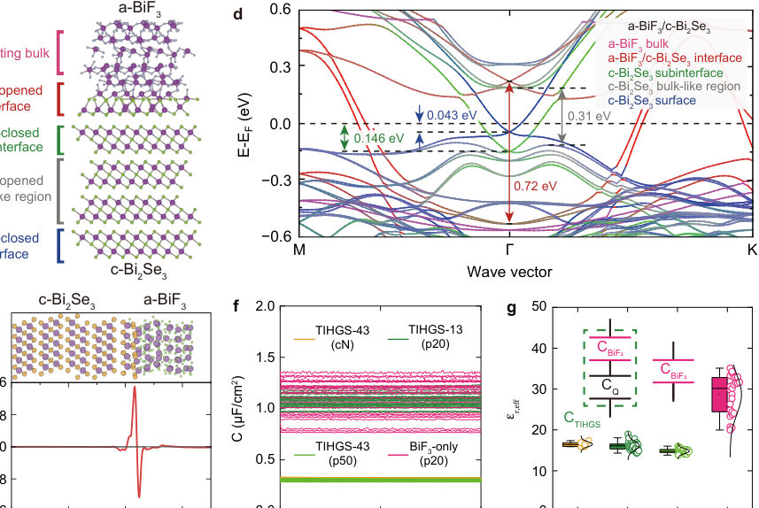
<figcaption class="paper-figure-caption"><b>Fig 3.</b> Fig. 3 Electronic reconstruction and electrostatic response of the buried TIHGS boundary. a, Six-quintuple- layer (QL) crystalline Bi2Se3 (c-Bi2Se3) (0001) slab used to model the pristine surface, with gap-closed outer QLs and a gap-opened bulk-like interior. b, Surface-weighted electronic band structure of a. Bulk-projected states are grey and surface- weighted states blue; the calculated bulk gap is 0.31 eV and the Dirac point lies ∼0.043 eV below the Fermi level (EF). c, Structural model of amorphous BiF3 (a-BiF3) interfaced with four-QL c-Bi2Se3, showing the immediate heterophase interface, adjacent subinterface QL, bulk-like region, and opposite surface. d, Position-resolved electronic...</figcaption>
</figure>
</div>

<p><strong>Summary.</strong> This work proposes using Topological-Insulator Heterophase Gate Stacks (TIHGS) to overcome limitations in traditional transistor gate dielectrics. By chemically converting the TI surface, the authors engineer a new, electronically active screening boundary. This approach not only improves device metrics like DIBL but fundamentally expands the design space for transistor electrostatics beyond simple dielectric capacitance.</p>
<p><strong>Why it may be interesting.</strong> While focused on solid-state electronics, the concept of engineering an interface's electronic boundary condition ($C_Q$) as a tunable parameter is analogous to controlling boundary conditions in open quantum systems or designing quantum interfaces.</p>
<details>
<summary>Detailed structure</summary>
<p><strong>Main problem.</strong> Conventional gate-stack scaling fails because finite interfacial responses constrain gate control; the goal is to engineer the gate-side screening boundary itself.</p>
<p><strong>Main result.</strong> Topological-Insulator Heterophase Gate Stacks (TIHGS) show superior transistor performance (e.g., 7x lower DIBL) by engineering the screening boundary, treating it as a new design variable.</p>
<p><strong>Method.</strong> The study combines position-resolved electronic structure calculations with capacitor measurements to model the electronic response of the engineered heterophase interface.</p>
<p><strong>Model / system.</strong> The system is a TIHGS formed by converting the surface of the topological insulator Bi2Se3 into insulating high-kappa BiF3, creating a buried, electronically active heterophase boundary.</p>
<p><strong>Key observables.</strong> Transistor switching characteristics (near-thermionic switching, low hysteresis), measured capacitance, and extracted effective trap density (D_it,eff).</p>
<p><strong>Important parameters / regimes.</strong> Equivalent Oxide Thickness (EOT), electronic compressibility of the buried boundary, and the relative contributions of various capacitance components (C_Q, C_BiF3, etc.).</p>
<p><strong>Assumptions / limitations.</strong> The gate-side screening response is governed by the electronic compressibility ($C_Q$) of the engineered heterophase boundary, which is treated as an additional design variable beyond nominal dielectric capacitance.</p>
<p><strong>Figures summary.</strong> Figure 1 schematically contrasts conventional gate-stack electrostatics with the TIHGS structure, detailing the gap-opened chemical interface and the adjacent gap-closed electronic boundary. Other figures show electrical measurements (I-V, C-V) confirming the insulating nature and capacitance reduction.</p>
<p><strong>Paper structure.</strong> The paper progresses from identifying the limitation of conventional scaling, proposing the TIHGS structure, presenting theoretical calculations of the interface states and capacitance reduction, and finally demonstrating superior device performance using MoS2 transistors.</p>
</details>
<details>
<summary>Abstract</summary>
<p>Conventional gate-stack scaling reduces dielectric thickness and increases permittivity while largely treating the position and electronic character of the gate-side screening boundary as fixed. As equivalent oxide thickness is reduced, however, finite interfacial responses can increasingly constrain gate control [1-5]. Here we show that this screening boundary can itself be engineered by converting the surface of the topological insulator Bi2Se3 into insulating high-kappa$ BiF3. Position-resolved calculations reveal a gap-opened immediate amorphous-BiF3/crystalline-Bi2Se3 interface and a reconstructed gap-closed Bi2Se3-derived state in the adjacent subinterface layer, accompanied by a localized interfacial dipole. Independently, capacitor measurements resolve a finite series response consistent with the electronic compressibility of this buried boundary, which reduces rather than enhances the nominal stack capacitance. Despite this capacitance penalty, MoS2 transistors with closely matched BiF3 thicknesses and a common BiF3/MoS2 channel-side material interface exhibit near-thermionic switching, negligible hysteresis, and approximately sevenfold lower drain-induced barrier lowering than BiF3-only controls. These results identify the position and electronic character of the gate-side screening boundary as additional design variables for transistor electrostatics beyond nominal dielectric capacitance.</p>
</details>
<p><sub><a href="#top">↑ back to top</a></sub></p>

<p><a id="paper-2609.29019"></a></p>
<h3 id="hyperbolic-trigonometric-and-periodic-solutions-of-local-and-nonlocal-fokas-lennels-equations"><a href="http://arxiv.org/abs/2609.29019v1">Hyperbolic, Trigonometric and Periodic Solutions of Local and Nonlocal Fokas-Lennels Equations</a></h3>
<p><strong>Authors:</strong> Avinash Khare, Avadh Saxena<br>
<strong>Type:</strong> theory · <strong>Category:</strong> other · <strong>PDF:</strong> <a href="https://arxiv.org/pdf/2609.29019v1">https://arxiv.org/pdf/2609.29019v1</a><br>
<strong>Analysis basis:</strong> full PDF text, analyzed in chunks
<strong>Topic relevance:</strong> <code>Keldysh / 2PI / non-Gaussian methods</code> <strong>1/5</strong></p>
<div class="figure-strip-hint">↔ Scroll figures horizontally</div>
<div class="paper-figures-scroll">
<figure class="paper-figure-card">
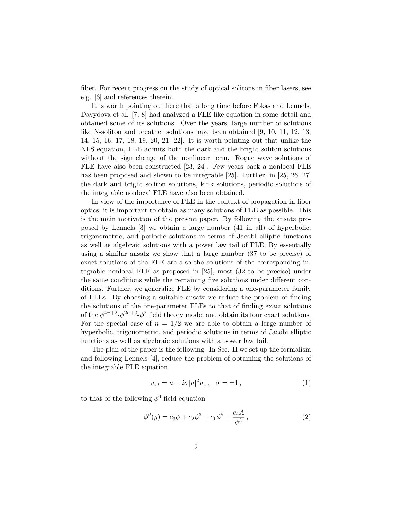
<figcaption class="paper-figure-caption"><b>Fig 1.</b> Low-resolution page preview, page 2</figcaption>
</figure>
<figure class="paper-figure-card">
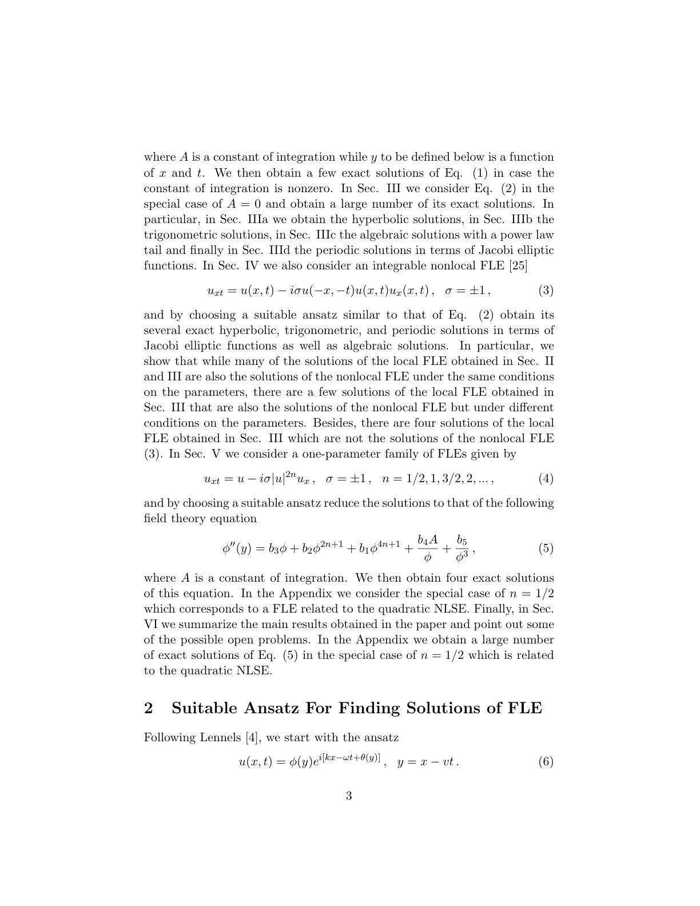
<figcaption class="paper-figure-caption"><b>Fig 2.</b> Low-resolution page preview, page 3</figcaption>
</figure>
<figure class="paper-figure-card">
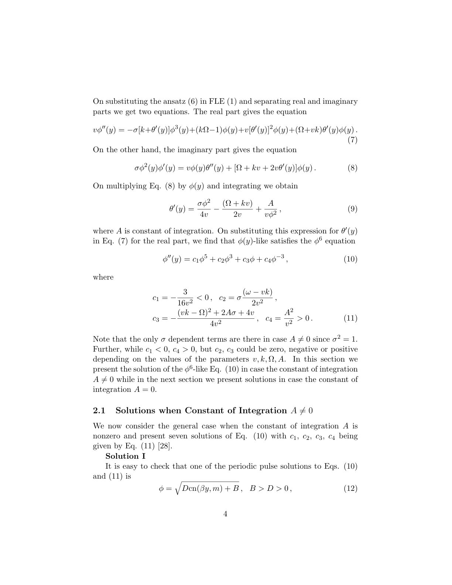
<figcaption class="paper-figure-caption"><b>Fig 3.</b> Low-resolution page preview, page 4</figcaption>
</figure>
<figure class="paper-figure-card">
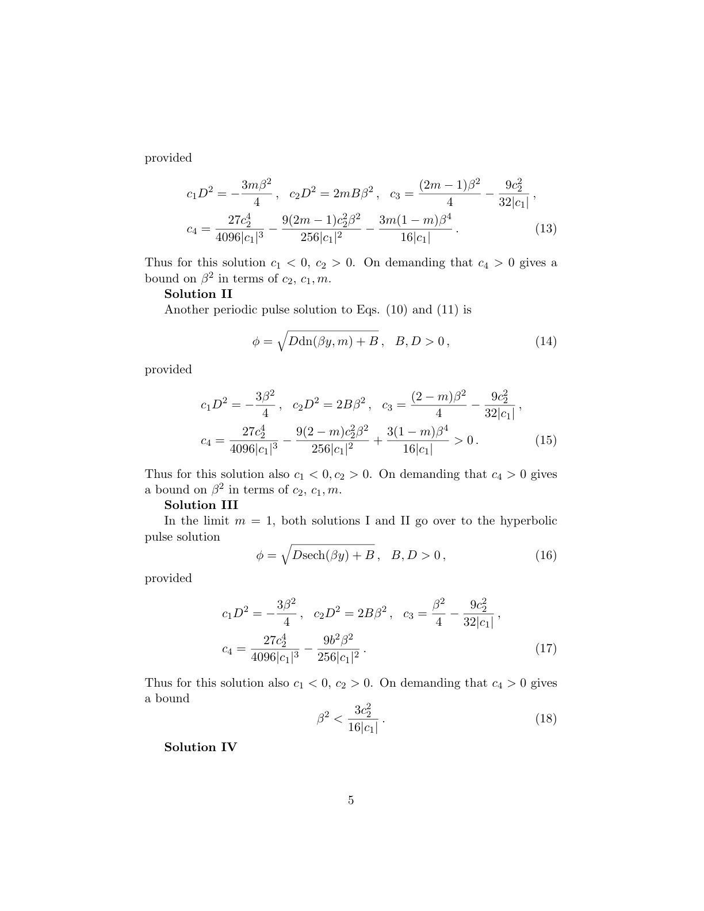
<figcaption class="paper-figure-caption"><b>Fig 4.</b> Low-resolution page preview, page 5</figcaption>
</figure>
<figure class="paper-figure-card">
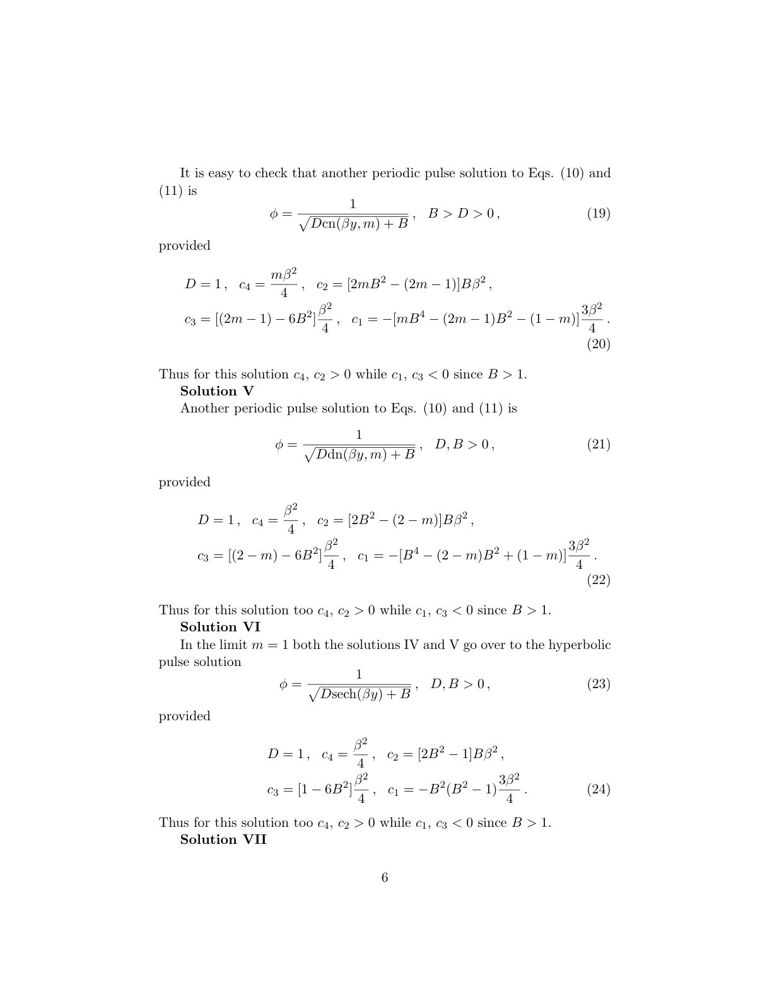
<figcaption class="paper-figure-caption"><b>Fig 5.</b> Low-resolution page preview, page 6</figcaption>
</figure>
</div>

<p><strong>Summary.</strong> This paper provides an extensive mathematical analysis to find exact solutions for the Fokas-Lennels Equations, a model for nonlinear wave propagation in optics. Using specialized ansatz methods, the authors cataloged a vast number of solutions, including hyperbolic, trigonometric, and periodic forms expressed via Jacobi elliptic functions. The work is a deep dive into nonlinear differential equations, providing a rich mathematical resource for nonlinear physics.</p>
<p><strong>Why it may be interesting.</strong> While the core topic is nonlinear wave physics, the mathematical techniques—solving complex nonlinear ODEs using elliptic functions and parameter constraints—are highly relevant to theoretical physics modeling in optics and nonlinear dynamics.</p>
<details>
<summary>Detailed structure</summary>
<p><strong>Main problem.</strong> The paper focuses on finding a large number of exact solutions (hyperbolic, trigonometric, periodic, and power-law) for the integrable local and nonlocal Fokas-Lennels Equations (FLE).</p>
<p><strong>Main result.</strong> The authors obtained a comprehensive catalog of solutions, including 41 solutions for the local FLE and numerous explicit forms in terms of Jacobi elliptic functions for the nonlocal case.</p>
<p><strong>Method.</strong> The primary method involves using specific ansatz solutions, such as $u(x, t) = \phi(y)e^{i[kx-\omega t+	heta(y)]}$, and substituting them into the governing differential equations to derive solvable forms for $\phi(y)$.</p>
<p><strong>Model / system.</strong> The model is the Fokas-Lennels Equation (FLE), which is a generalization of the Nonlinear Schrödinger Equation (NLSE) used to model pulse propagation in optical fibers, incorporating higher-order nonlinear effects.</p>
<p><strong>Key observables.</strong> The solutions themselves, which are functions $\phi(y)$ exhibiting hyperbolic, trigonometric, or periodic behavior.</p>
<p><strong>Important parameters / regimes.</strong> Parameters include $v, k, \Omega, \sigma, A, eta, m$, and the coefficients $c_1, c_2, c_3$ derived from the physical context.</p>
<p><strong>Assumptions / limitations.</strong> The analysis relies heavily on the specific ansatz used and requires satisfying numerous stringent algebraic constraints on the system parameters for any solution to be valid.</p>
<p><strong>Paper structure.</strong> The paper proceeds by first analyzing the local FLE using an ansatz, deriving a $\phi^6$-like equation. It then analyzes the nonlocal FLE, leading to a general equation (Eq. (27)). Finally, it presents a systematic catalog of solutions by solving the resulting differential equation $\phi''(y) = c_1\phi^3(y) + c_2\phi^2(y) + c_3\phi(y)$ under various parameter constraints.</p>
</details>
<details>
<summary>Abstract</summary>
<p>We obtain a large number of exact hyperbolic, trigonometric, and periodic solutions in terms of Jacobi elliptic functions as well as algebraic solutions with a power law tail of the integrable local Fokas-Lennels equation and integrable nonlocal Fokas-Lennels equation. Further, we consider a one-parameter family of generalized Fokas-Lenells equations and obtain a few of their exact solutions.</p>
</details>
<p><sub><a href="#top">↑ back to top</a></sub></p>

<p><a id="paper-2609.29263"></a></p>
<h3 id="nodal-orbital-anti-phase-superconducting-state-in-bilayer-nickelates"><a href="http://arxiv.org/abs/2609.29263v1">Nodal Orbital-Anti-Phase Superconducting State in Bilayer Nickelates</a></h3>
<p><strong>Authors:</strong> Marius Scholten, Steffen Bötzel, Frank Lechermann, Rafael M. Fernandes, Ilya M. Eremin<br>
<strong>Type:</strong> theory · <strong>Category:</strong> strongly correlated electrons · <strong>PDF:</strong> <a href="https://arxiv.org/pdf/2609.29263v1">https://arxiv.org/pdf/2609.29263v1</a><br>
<strong>Analysis basis:</strong> full PDF text, analyzed in chunks
<strong>Topic relevance:</strong> <code>Keldysh / 2PI / non-Gaussian methods</code> <strong>1/5</strong></p>
<div class="figure-strip-hint">↔ Scroll figures horizontally</div>
<div class="paper-figures-scroll">
<figure class="paper-figure-card">
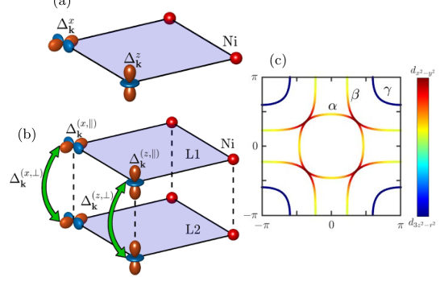
<figcaption class="paper-figure-caption"><b>Fig 1.</b> FIG. 1. Schematic illustration of the (a) single-layer two- orbital and (b) bilayer two-orbital models, typically employed in bilayer nickelates [15, 25]. The normal state Fermi surface topology is shown in (c), with a color map showing the or- bital weights. We use the common notation of labeling the Fermi surface sheets with Greek letters. The α- and β-sheets have a mixed dx2−y2/d3z2−r2-orbital character from the two adjacent NiO2 layers, corresponding to bonding (α) and anti- bonding (β) bands. The strength of the bonding-antibonding splitting between the α- and β-bands is determined by the on- site hybridization between the 3dx2−y2 and 3d3z2−r2-orbitals. At the same time, the γ Fermi...</figcaption>
</figure>
<figure class="paper-figure-card">
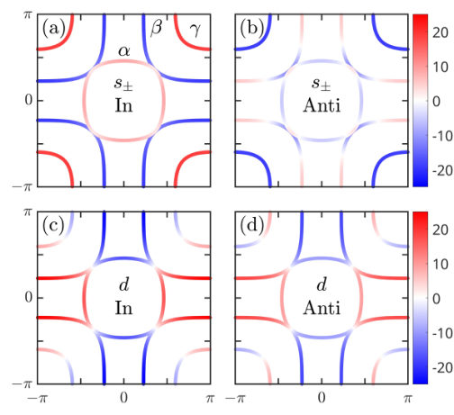
<figcaption class="paper-figure-caption"><b>Fig 2.</b> FIG. 2. Projected gaps on the Fermi surface sheets in the bilayer model [25] for the s±-wave state with orbital-in-phase (simple bonding-antibonding) (a) and for the s±-wave orbital- anti-phase state (b). Panels (c) and (d) are analogous plots for the d-wave state. Within the momentum-independent intraorbital s± parametrization considered here, only the orbital-anti-phase state can host these orbital-hybridization- induced accidental nodes. The color-scale units are given in meV.</figcaption>
</figure>
<figure class="paper-figure-card">

<figcaption class="paper-figure-caption"><b>Fig 3.</b> FIG. 3. Projected gaps on the Fermi surface sheets from Fig. 2 shown as a function of the polar angle φΓ/M measured in degrees, where Γ/M denote the high-symmetry points. For the α-pocket, φΓ is measured with respect to Γ = (0, 0), while the β and γ-pockets are measured about M = (π, π) with the polar angle φM.</figcaption>
</figure>
<figure class="paper-figure-card">
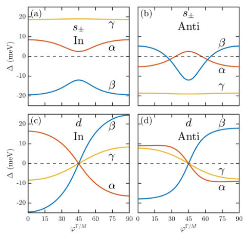
<figcaption class="paper-figure-caption"><b>Fig 4.</b> Fig. 2(a). The angular dependencies of the projected gaps along each Fermi sheet are shown in Fig. 3(a). This model leads to the respective ratios κb = −7.6 &lt; 0 and κa = −2.5 &lt; 0, which means that no band is able to host nodes due to the in-phase character of the bonding and antibonding gaps. To model a nodal state with nodes on the α-band, we simply shift the relative phase between the gap compo- nents of the two orbitals by π. This yields an orbital- anti-phase state due to the sign change of the z-orbital pairing components. According to the definition of Σj, we thus find sizable anti-phase ratios κb = 7.6 &gt; 0 and κa = 2.5 &gt; 0, enabling nodes on both the α- and β- bands. The respective...</figcaption>
</figure>
<figure class="paper-figure-card">
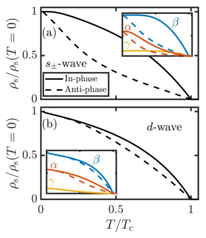
<figcaption class="paper-figure-caption"><b>Fig 5.</b> FIG. 5. Calculated normalized superfluid stiffness for the two- orbital bilayer nickelate model in the (a) s±-wave and (b) d- wave gap states. The critical temperature is set to Tc = 80 K. The dashed and solid curves refer to the orbital-anti-phase and in-phase gap structures, as discussed in the main text. The insets show the contributions of the individual bands normalized by the zero temperature value of the β-band con- tribution.</figcaption>
</figure>
</div>

<p><strong>Summary.</strong> This theoretical work investigates the superconducting gap symmetry in bilayer nickelates, focusing on the unique case of an orbital-anti-phase pairing structure. The authors predict that this specific gap configuration will lead to novel nodal structures on the Fermi surface and will alter the low-temperature behavior of the superfluid stiffness. These predictions offer concrete, testable signatures for experimental verification in related multiorbital superconductors.</p>
<p><strong>Why it may be interesting.</strong> While focused on cuprate/nickelate superconductivity, the detailed theoretical framework involving multi-orbital pairing symmetries, gap structure analysis, and predicting measurable signatures (like nodal changes) is highly relevant to understanding complex pairing mechanisms in strongly correlated electron systems.</p>
<details>
<summary>Detailed structure</summary>
<p><strong>Main problem.</strong> The paper analyzes the consequences of an orbital-anti-phase structure of the superconducting gap in bilayer nickelates and discusses potential experimental signatures.</p>
<p><strong>Main result.</strong> The orbital-anti-phase structure predicts the appearance of additional nodal structures on the Fermi surface sheets and modifies the temperature dependence of the superfluid stiffness at low temperatures.</p>
<p><strong>Method.</strong> The analysis uses theoretical modeling based on the Bogoliubov-de Gennes (BdG) Hamiltonian, deriving nodal conditions by setting energy eigenvalues to zero.</p>
<p><strong>Model / system.</strong> The system is bilayer nickelates, specifically $    ext{La}_3   ext{Ni}_2   ext{O}_7$, modeled using an effective four-orbital approach that simplifies to a two-orbital bilayer model.</p>
<p><strong>Key observables.</strong> Additional nodal structure (probed by ARPES) and the temperature dependence of the superfluid stiffness.</p>
<p><strong>Important parameters / regimes.</strong> The relative phase shift ($\pi$-shift) between superconducting order parameters on different orbitals, and the parameters characterizing intra- and inter-layer/orbital pairing components.</p>
<p><strong>Assumptions / limitations.</strong> The analysis explores the consequences of the orbital-anti-phase gap structure, which is not enforced by symmetry alone.</p>
<p><strong>Figures summary.</strong> Figure 1 illustrates the normal state Fermi surface topology ($\alpha, eta, \gamma$ sheets) in bilayer nickelates, showing orbital weights derived from $d_{x^2-y^2}$ and $d_{z^2-r^2}$ orbitals.</p>
<p><strong>Paper structure.</strong> The paper progresses from establishing the general superconducting gap symmetries to analyzing the specific consequences of the orbital-anti-phase structure, deriving nodal conditions, and finally predicting measurable thermodynamic signatures like the superfluid stiffness modification.</p>
</details>
<details>
<summary>Abstract</summary>
<p>The recent discovery of high-$T_c$ superconductivity in the bilayer nickelate La$_3$Ni$_2$O$_7$ (La-327) under applied pressure and compressive strain opened a new avenue to elucidate the interplay between multiorbital intralayer and interlayer electronically driven Cooper-pairing in bilayer systems. Depending on the details of the electronic structure in the normal state, the superconducting gap in bilayer nickelates is predicted to have either bonding-antibonding $s_{\pm}$-wave symmetry, driven by dominant interlayer Cooper-pairing, or $d$-wave symmetry with substantial intralayer Cooper-pairing. Despite this general picture, the orbital structure of the superconducting gap in these multiorbital systems has been less explored. Here, we analyze the consequences of an orbital-anti-phase structure of the superconducting gap and discuss its possible experimental signatures. We demonstrate that additional pairs of nodes may appear on the $α$ and/or $β$ Fermi surface sheets due to the sign change of the superconducting gap between the involved orbitals. Apart from this additional nodal structure, which is not enforced by the symmetries of the gap function and can be probed in ARPES experiments, the orbital-anti-phase gap modifies the temperature dependence of the superfluid stiffness at low temperatures, providing a concrete experimental prediction to test its realization in bilayer nickelates and related multiorbital systems.</p>
</details>
<p><sub><a href="#top">↑ back to top</a></sub></p>

<p><a id="paper-2609.28687"></a></p>
<h3 id="power-law-growth-of-shift-current-with-superlattice-period-in-flat-chern-bands"><a href="http://arxiv.org/abs/2609.28687v1">Power-law growth of shift current with superlattice period in flat Chern bands</a></h3>
<p><strong>Authors:</strong> Nianlong Zou, Cheng Xu, Ning Mao, Yang Zhang<br>
<strong>Type:</strong> theory · <strong>Category:</strong> other · <strong>PDF:</strong> <a href="https://arxiv.org/pdf/2609.28687v1">https://arxiv.org/pdf/2609.28687v1</a><br>
<strong>Analysis basis:</strong> full PDF text, analyzed in chunks
<strong>Topic relevance:</strong> <code>non-equilibrium universality</code> <strong>1/5</strong></p>
<div class="figure-strip-hint">↔ Scroll figures horizontally</div>
<div class="paper-figures-scroll">
<figure class="paper-figure-card">

<figcaption class="paper-figure-caption"><b>Fig 1.</b> FIG. 1. (a), (b) Schematics of the shift-current response for (a) pure LLs and (b) LLs with perturbative mixing. Dashed circles and black arrows denote the cyclotron orbits and their centers, re- spectively. (c) Two symmetry-breaking channels: trigonal warp- ing of the dispersion and distortion of the skyrmion texture. (d) Flow diagram from the characteristic length 𝑙𝑚(𝑙𝐵) through the LL mixing ∆and the cyclotron shift 𝛿𝐴to the integrated weight and the peak magnitude of the shift current. The level-spacing exponent is 𝑖= 2 (𝑖= 1) for the Schrödinger (Dirac) SkX model, and 𝑛is the momentum order of the perturbation.</figcaption>
</figure>
<figure class="paper-figure-card">

<figcaption class="paper-figure-caption"><b>Fig 2.</b> FIG. 2. (a) Integrated shift current |𝑊𝑦𝑦𝑦 2,−1(𝑀)∕𝑊𝑦𝑦𝑦 2,−1(0)| for mas- sive and massless Dirac models (chiral-𝑁model with 𝑁= 1) un- der a uniform magnetic field, for 𝑀= 0, 0.5, and 2 eV. (b) In- tegrated shift current |𝑊𝑦𝑦𝑦 6,−5(𝑀)∕𝑊𝑦𝑦𝑦 6,−5(0)| for tetralayer rhombo- hedral graphene (chiral-𝑁model with 𝑁= 4) under a uniform magnetic field, for 𝑀= 0, 30, and 60 meV. Dashed lines mark the 𝑙0 𝐵and 𝑙−2𝑁 𝐵 asymptotes, and the dips in (b) are sign changes of the cyclotron-shift difference.</figcaption>
</figure>
<figure class="paper-figure-card">

<figcaption class="paper-figure-caption"><b>Fig 3.</b> FIG. 4. (a) Band structure of a Dirac electron coupled to a skyrmion texture in the adiabatic limit, showing the relativis- tic ladder 𝑁= 0, ±1, ±2, ±3. (b) Shift conductivity spectrum (solid) and band-resolved contributions of the cross transitions −1 →2, −2 →1, −1 →3, and −3 →1 (dashed), showing the chiral-symmetry-induced cancellation of cross transitions (class i), the survival of zero-mode transitions (class ii), and the self- conjugate diagonal transitions (class iii). (c) Peak magnitude and (d) frequency-integrated weight of the band-resolved shift current for the 0 →1 and −1 →2 transitions versus the moiré period 𝑙𝑚 under the texture and warping perturbations. Dashed lines are the...</figcaption>
</figure>
<figure class="paper-figure-card">

<figcaption class="paper-figure-caption"><b>Fig 4.</b> FIG. 3. (a) Band structure of the Schrödinger SkX model in the adiabatic limit, showing the pseudo-LL ladder 𝑁= 0, 1, 2. (b) LL-weight deficit ∆𝑊1 = 1 −𝑊1 of the 𝑁= 1 miniband versus 𝑙𝑚 under the texture and warping perturbations. (c) Peak magnitude max𝜔|𝜎| and (d) frequency-integrated weight 𝑊10 of the shift cur- rent for the 0 →1 transition versus the moiré period 𝑙𝑚under the two perturbations. Dashed lines are the predicted power laws.</figcaption>
</figure>
</div>

<p><strong>Summary.</strong> This work derives universal power-law scaling laws governing the shift current in topological materials exhibiting flat Chern bands. The current is shown to be proportional to the cyclotron shift caused by Landau-level mixing. The scaling laws are verified across various models, predicting how the photocurrent resonance strength depends on the moiré period and symmetry-breaking perturbations.</p>
<p><strong>Why it may be interesting.</strong> The universal scaling laws derived for the photocurrent response based on geometric properties of flat bands provide powerful, predictive tools for characterizing topological electronic states, which is relevant to understanding emergent quantum phenomena in condensed matter.</p>
<details>
<summary>Detailed structure</summary>
<p><strong>Main problem.</strong> The paper investigates the shift current, a dc photocurrent generation mechanism in noncentrosymmetric topological quantum materials, and its dependence on band geometry.</p>
<p><strong>Main result.</strong> The shift current exhibits a universal power-law scaling with the characteristic length scale ($l$), specifically $l^{i+1-n}$ for the integrated weight and $l^{2i+1-n}$ for the peak magnitude.</p>
<p><strong>Method.</strong> The analysis uses a theoretical framework based on decomposing the position operator into guiding-center and cyclotron motion, leading to a calculation of the shift current proportional to the cyclotron shift induced by Landau-level mixing.</p>
<p><strong>Model / system.</strong> The study applies to flat Chern bands realized in moiré materials, such as twisted MoTe2 and twisted bilayer graphene, modeled using Landau levels (LLs) and moiré skyrmion crystals (SkX).</p>
<p><strong>Key observables.</strong> Shift current, integrated weight of the zero-bias photocurrent resonance, and peak magnitude of the resonance.</p>
<p><strong>Important parameters / regimes.</strong> Moiré period ($l_m$) or magnetic length ($l_B$), momentum order of the symmetry-breaking perturbation ($n$), and the level spacing ($\Delta E \propto l^{-i}$).</p>
<p><strong>Assumptions / limitations.</strong> The analysis relies on the system being in the ideal quantum geometry limit, and approximations are made regarding the frequency integration of the shift current.</p>
<p><strong>Figures summary.</strong> Figures illustrate the shift-current response comparing pure LLs to mixed LLs, and flow diagrams summarize the scaling of the integrated weight and peak magnitude based on the perturbation order.</p>
<p><strong>Paper structure.</strong> The paper establishes the theoretical link between the shift current and the cyclotron shift, derives the universal power-law scaling laws, and then verifies these laws by applying the framework to specific physical models like chiral-$N$ LLs and Schrödinger/Dirac moiré skyrmion crystals.</p>
</details>
<details>
<summary>Abstract</summary>
<p>Quantum geometry governs a wide array of physical observables in topological quantum materials. In its ideal limit, quantum geometry yields exact bounds and analytical results for a growing class of observables. However, a comparable framework for the shift current remains elusive because it depends on geometric relations between multiple bands. In this work, we show that the shift current is proportional to the cyclotron shift, the displacement of the cyclotron center induced by Landau-level mixing. This mechanism yields a universal scaling law: the integrated weight and the peak magnitude scale as $l^{i+1-n}$ and $l^{2i+1-n}$ in the magnetic length or moiré period $l$, where $n$ is the momentum order of the symmetry-breaking perturbation and $ΔE \propto l^{-i}$ is the level spacing. We verify the scaling law in exactly solvable chiral-$N$ Landau levels under a uniform magnetic field and in Schrödinger and Dirac moiré skyrmion crystals, which capture the flat Chern bands of twisted MoTe$_2$ and twisted bilayer graphene. For a Schrödinger flat band with a distorted skyrmion texture, the integrated weight grows linearly with the moiré period and the resonant peak grows cubically.</p>
</details>
<p><sub><a href="#top">↑ back to top</a></sub></p>

<p><a id="paper-2609.29354"></a></p>
<h3 id="superconductivity-in-structurally-complex-math983math-phase-re-x-x-v-nb-ta-and-a-derived-medium-entropy-alloys"><a href="http://arxiv.org/abs/2609.29354v1">Superconductivity in structurally complex $σ$-Phase Re-X (X = V, Nb, Ta) and a derived medium-entropy alloys</a></h3>
<p><strong>Authors:</strong> Pavan Kumar Meena, Tomasz Klimczuk<br>
<strong>Type:</strong> experiment · <strong>Category:</strong> other · <strong>PDF:</strong> <a href="https://arxiv.org/pdf/2609.29354v1">https://arxiv.org/pdf/2609.29354v1</a><br>
<strong>Analysis basis:</strong> full PDF text, analyzed in chunks
<strong>Topic relevance:</strong> <code>analog quantum simulation</code> <strong>1/5</strong></p>
<div class="figure-strip-hint">↔ Scroll figures horizontally</div>
<div class="paper-figures-scroll">
<figure class="paper-figure-card">

<figcaption class="paper-figure-caption"><b>Fig 1.</b> FIG. 1. Powder X-ray diffraction patterns of (a) Re0.76V0.24, (b) Re0.56Nb0.44, and (c) Re0.60Ta0.40. Experimental data are shown as symbols, while the solid red lines represent the Le Bail refinements, confirming the tetragonal σ-phase structure of all compounds. The difference between observed and calculated intensities is shown below of each patterns. Vertical tick marks indicate the expected Bragg reflection positions corresponding to the allowed (hkl) planes.</figcaption>
</figure>
<figure class="paper-figure-card">

<figcaption class="paper-figure-caption"><b>Fig 2.</b> FIG. 2. (a) and (b) Zero-field-cooled (ZFC) and field-cooled (FC) volume magnetic susceptibility of Re0.76V0.24 and Re0.56Nb0.44 compounds measured in a magnetic field of 10 Oe, the transition from the measurements are 4.48(2) and 2.31(5) K for Re0.76V0.24 and Re0.56Nb0.44 compounds, respectively. (c) and (d) The magnetic field-dependent magnetization at 1.8 K is shown, confirming type-II superconductivity. (e) and (f) The estimation of H∗ c1 from the (MV ) vs applied field (H) isotherms as shown in the inset of (e) and (f). Temperature-dependent H∗ c1 fitted with Ginzburg-Landau relation. The critical temperature values at zero field were used from the heat capacity transition temperature.</figcaption>
</figure>
<figure class="paper-figure-card">

<figcaption class="paper-figure-caption"><b>Fig 3.</b> FIG. 3. (a-c) Temperature dependence of the zero-field heat capacity of Re0.76V0.24, Re0.56Nb0.44 and Re0.60Ta0.40, presented as C/T versus T2. A clear superconducting transition from the normal state is observed at the respective superconducting transition temperatures. (d-f) Temperature dependence of the electronic heat capacity Cel as a function of T, extracted from the total heat capacity and fitted using an isotropic s-wave superconducting gap model.</figcaption>
</figure>
<figure class="paper-figure-card">

<figcaption class="paper-figure-caption"><b>Fig 4.</b> FIG. 4. (a-c) Temperature dependence of resistivity for Re0.76V0.24, Re0.56Nb0.44, and Re0.60Ta0.40. The inset shows the zoomed view of the resistivity, showing a clear transition in resistivity. (d-f) The upper critical field estimated from resistivity, magnetization, and heat capacity measurements for these compounds is shown, fitted with the Gingzburg Landau relation, where the inset shows temperature-dependent resistivity data with applied different magnetic fields.</figcaption>
</figure>
<figure class="paper-figure-card">

<figcaption class="paper-figure-caption"><b>Fig 5.</b> FIG. 5. (a) Powder XRD patterns of Re0.56Nb0.19Ta0.19V0.06, where experimental data and Le Bail fit shows by points and solid red line respectively, confirming the tetragonal structure of the compounds. The difference between the observed and calculated intensities is displayed beneath each pattern. Vertical tick marks indicate the expected Bragg peak positions corresponding to the respective hkl planes. (b) Elemental map of Re0.56Nb0.19Ta0.19V0.06 obtained using EDS, where different elements are represented by distinct colors, confirming the uniform distribution within the sample</figcaption>
</figure>
</div>

<p><strong>Summary.</strong> This work synthesizes and tests superconducting properties in complex $\sigma$-phase Re-based alloys and related medium-entropy alloys. By measuring magnetic, resistive, and specific-heat responses, the authors confirm bulk superconductivity and establish this material family as a valuable model for understanding how structural complexity and chemical disorder influence superconducting pairing mechanisms.</p>
<p><strong>Why it may be interesting.</strong> While focused on superconductivity, the study's emphasis on structural complexity and chemical disorder in metallic systems touches upon concepts relevant to strongly correlated electron behavior and phase transitions, which are key areas in condensed matter theory.</p>
<details>
<summary>Detailed structure</summary>
<p><strong>Main problem.</strong> The study investigates the interplay between chemical disorder, electronic structure, and superconductivity in structurally complex sigma (σ)-phase Re-based alloys.</p>
<p><strong>Main result.</strong> Both the $\sigma$-phase Re-X alloys and their derived medium-entropy alloy exhibit bulk type-II superconductivity, establishing this family as a model system for studying structural complexity effects on superconductivity.</p>
<p><strong>Method.</strong> The research employed synthesis techniques followed by comprehensive characterization using magnetization, electrical resistivity, and specific-heat measurements.</p>
<p><strong>Model / system.</strong> The physical systems are structurally complex tetragonal $\sigma$-phase intermetallic compounds, specifically Re-X (X = V, Nb, Ta) and a derived medium-entropy alloy (MEA).</p>
<p><strong>Key observables.</strong> Superconducting transition temperature ($T_c$), magnetic susceptibility (Meissner effect), electronic heat capacity jump ($\Delta C$), and upper critical field ($H_{c2}$).</p>
<p><strong>Important parameters / regimes.</strong> The analysis tracks the systematic variation of superconducting parameters ($\lambda_{	ext{el-ph}}$, $\Theta_D$, $ ext{DOS}(E_F)$) across different transition metal substitutions (3d to 5d).</p>
<p><strong>Assumptions / limitations.</strong> The superconducting state is analyzed using BCS theory, suggesting a weak-coupling, fully gapped superconducting state.</p>
<p><strong>Figures summary.</strong> Figures confirm the tetragonal $\sigma$-phase structure via pXRD, show type-II superconductivity via ZFC/FC magnetization curves, and present heat capacity data used to determine $T_c$ and superconducting gap parameters.</p>
<p><strong>Paper structure.</strong> The paper systematically analyzes the superconducting properties of the $\sigma$-phase series, first confirming the structure and then performing detailed thermodynamic and magnetic measurements to extract superconducting parameters and correlate them with chemical composition and disorder.</p>
</details>
<details>
<summary>Abstract</summary>
<p>The structurally complex tetragonal sigma ($σ$)-phase provides a unique platform for investigating the interplay between chemical disorder, electronic structure, and superconductivity, particularly in Re-based alloys where unconventional superconductivity has been widely discussed. Here, we synthesize and investigate the superconducting properties of $σ$-phase Re-X (X = V, Nb, and Ta) alloys with compositions Re$_{0.76}$V$_{0.24}$, Re$_{0.56}$Nb$_{0.44}$, and Re$_{0.60}$Ta$_{0.40}$. These compositions lie within the narrow stability range of the $σ$ phase, underscoring the critical role of valence electron concentration in phase formation. To examine the influence of enhanced chemical disorder, we further synthesize the structurally complex medium-entropy alloy Re$_{0.56}$Nb$_{0.19}$Ta$_{0.19}$V$_{0.06}$, derived from these binary systems. Magnetization, electrical resistivity, and specific-heat measurements establish bulk type-II superconductivity in all compounds. Analysis of the electronic heat capacity is consistent with a fully gapped, weak-coupling BCS superconducting state. In contrast, the normal-state resistivity exhibits an unconventional negative temperature coefficient, and the superconducting transition temperature values obtained from resistivity measurements are higher than those determined from other measurements. Our results demonstrate that both the $σ$-phase Re-X alloys, spanning 3d, 4d, and 5d transition-metal substitutions, and their medium-entropy counterpart constitute an attractive family of model systems for investigating the effects of structural complexity, chemical disorder, and spin-orbit coupling on superconductivity in Re-based materials.</p>
</details>
<p><sub><a href="#top">↑ back to top</a></sub></p>
<h3 id="other-secondary-papers-4">Other secondary papers (4)</h3>
<details>
<summary>Show other secondary papers</summary>

<p><a id="paper-2609.29190"></a></p>
<h3 id="antisymmetric-breathing-in-altermagnetic-skyrmions"><a href="http://arxiv.org/abs/2609.29190v1">Antisymmetric breathing in altermagnetic skyrmions</a></h3>
<p><strong>Authors:</strong> Yunxi Jiang, Chen Xuan, Xi Chen, Zhikai Wang, Qinfeng Zhu, Hao Yu<br>
<strong>Type:</strong> theory · <strong>Category:</strong> other · <strong>PDF:</strong> <a href="https://arxiv.org/pdf/2609.29190v1">https://arxiv.org/pdf/2609.29190v1</a><br>
<strong>Analysis basis:</strong> full PDF text, analyzed in chunks</p>
<div class="figure-strip-hint">↔ Scroll figures horizontally</div>
<div class="paper-figures-scroll">
<figure class="paper-figure-card">

<figcaption class="paper-figure-caption"><b>Fig 1.</b> FIG. 1. Simulated d-wave altermagnetic skyrmion at zero field and ρ = 2. (a,b) Out-of-plane magnetization on sublattices A and B. (c) mA z + mB z . (d) u(φ) = rA(φ) −rB(φ), with φ measured from the x axis. The solid curve uses the simulated contours. The dashed curve is (1.29 nm) cos 2φ.</figcaption>
</figure>
<figure class="paper-figure-card">

<figcaption class="paper-figure-caption"><b>Fig 2.</b> FIG. 2. Sublattice skyrmions at Bz = +0.3 T. The gray dashed curves show the mz = 0 contours at Bz = 0, and the black curves show those at Bz = +0.3 T. (a) Sublattice A expands to RA = 4.58 nm. (b) Sublattice B contracts to RB = 3.61 nm.</figcaption>
</figure>
<figure class="paper-figure-card">

<figcaption class="paper-figure-caption"><b>Fig 3.</b> FIG. 3. Changes in the radii and ellipticities at ρ = 2. (a) δR versus Bz. (b) 104[es(Bz) −es(0)] and 104eu(Bz), showing the even and odd dependences, respectively.</figcaption>
</figure>
<figure class="paper-figure-card">

<figcaption class="paper-figure-caption"><b>Fig 4.</b> FIG. 4. Radius difference produced by the exchange modulation at Bz = 0. All coefficients along x are multiplied by 1 + δ and those along y by 1 −δ on both sublattices. The unperturbed ¯A = √A1A2 and the other parameters are fixed as in Sec. II. (a) δR versus δ for the listed ρ = A1/A2. Reversing δ reverses δR, which vanishes at ρ = 1. (b) χϵ = (dδR/dδ)0 versus ρ.</figcaption>
</figure>
<figure class="paper-figure-card">

<figcaption class="paper-figure-caption"><b>Fig 5.</b> FIG. 5. AM and PAR compared at fixed ¯A versus ρ = A1/A2. (a) Mean radius ¯R at Bz = 0. (b) χ = (dδR/dBz)0 using the symmetric difference χ ≃δR(B1)−δR(−B1)</figcaption>
</figure>
</div>
<p><strong>Summary.</strong> This paper theoretically and numerically investigates the dynamic properties of skyrmions in altermagnets exhibiting $d$-wave symmetry. It shows that the difference in the two sublattice radii ($\delta R$) supports a distinct breathing mode. This mode's oscillation frequency is calculated and compared against direct simulations, providing a pathway to characterize magnetic anisotropy using dynamic measurements.</p>
<p><strong>Why it may be interesting.</strong> The study provides a detailed, quantitative link between material symmetry ($d$-wave), geometric anisotropy (ellipticity), and measurable collective excitations (breathing modes) in magnetic textures, relevant for spintronics applications.</p>
<details>
<summary>Detailed structure</summary>
<p><strong>Main problem.</strong> The study investigates the 'antisymmetric breathing' mode in skyrmions embedded in altermagnetic materials, focusing on how the radius difference ($\delta R$) supports a characteristic dynamical oscillation.</p>
<p><strong>Main result.</strong> The radius difference $\delta R$ is shown to support a dynamical mode that oscillates in quadrature with the uniform helicity, with calculated frequencies matching those derived from time-domain fitting of LLG simulations.</p>
<p><strong>Method.</strong> The analysis combines continuum energy density minimization, linear response theory to field/strain, and time-domain fitting of Landau-Lifshitz-Gilbert (LLG) simulations data using Fourier analysis.</p>
<p><strong>Model / system.</strong> The system is an altermagnet hosting skyrmions with $d$-wave symmetry, modeled using a lattice Hamiltonian and analyzed via continuum energy functionals derived from the LLG equation.</p>
<p><strong>Key observables.</strong> Effective skyrmion radii ($R_A, R_B$), radius difference ($\delta R$), net magnetic moment ($\mu_z$), and oscillation frequencies ($f_{\delta R}, f_{ar{\phi}}$).</p>
<p><strong>Important parameters / regimes.</strong> Exchange contrast ($
ho = A_1/A_2$), external magnetic field ($B_z$), and strain modulation parameter ($\delta$).</p>
<p><strong>Assumptions / limitations.</strong> The analysis relies on continuum approximations, quadratic energy expansions, and fitting procedures to extract dynamic parameters from time-series data.</p>
<p><strong>Figures summary.</strong> Figures illustrate zero-field magnetization contours for sublattices A and B, and show the field-induced expansion/contraction of the two sublattices, leading to a measurable radius difference.</p>
<p><strong>Paper structure.</strong> The paper progresses from defining the geometry and Hamiltonian, to analyzing the linear response of $\delta R$ to external fields ($B_z$) and strain ($\delta$), and finally to performing time-domain analysis to extract oscillation frequencies.</p>
</details>
<details>
<summary>Abstract</summary>
<p>A skyrmion in an altermagnet with \(d\) wave symmetry consists of two elliptical sublattice textures with perpendicular long axes. For each sublattice component $η=A,B$, we define an effective skyrmion radius $R_η=\sqrt{a_ηb_η}$, where $a_η$ and $b_η$ are the distances from the skyrmion center to its boundary along $y$ and $x$, respectively. For the anisotropic exchange parameters studied, the equilibrium radius at zero field is smaller than in a reference with parallel sublattice textures and otherwise identical parameters. A magnetic field perpendicular to the film expands one sublattice skyrmion and contracts the other, generating a radius difference $\dR=R_A-R_B$ and a net magnetic moment. The exchange modulation used to represent uniaxial strain also produces a nonzero radius difference at zero field. Because the strong and weak exchange directions are interchanged between the two sublattices, a common directional change of the exchange couplings increases one radius and decreases the other. Unlike the magnetic coupling, this mechanism vanishes when the two sublattice exchange tensors become identical. The radius difference also supports an antisymmetric breathing mode. After a short field pulse, it oscillates in quadrature with the uniform helicity, the common rotation of the wall magnetization within the film plane, at \(49.5\,\mathrm{GHz}\) for the reference parameters.</p>
</details>
<p><sub><a href="#top">↑ back to top</a></sub></p>

<p><a id="paper-2609.29719"></a></p>
<h3 id="nodal-line-semimetals-with-non-quantized-berry-phase"><a href="http://arxiv.org/abs/2609.29719v1">Nodal-Line Semimetals with Non-Quantized Berry Phase</a></h3>
<p><strong>Authors:</strong> Zhi-Xia Li, Liangliang Huang, Min-Xue Yang, Feng Tang, D. Y. Xing, Wei Chen<br>
<strong>Type:</strong> both · <strong>Category:</strong> other · <strong>PDF:</strong> <a href="https://arxiv.org/pdf/2609.29719v1">https://arxiv.org/pdf/2609.29719v1</a><br>
<strong>Analysis basis:</strong> full PDF text, analyzed in chunks</p>
<div class="figure-strip-hint">↔ Scroll figures horizontally</div>
<div class="paper-figures-scroll">
<figure class="paper-figure-card">

<figcaption class="paper-figure-caption"><b>Fig 1.</b> FIG. 1. (a) Band structure of the NLSM at kz = 0, with the nodal ring denoted by NR. (b) Torus Fermi surface with four extremal cross sections perpendicular to the kx direction: the minimal sections α1 and α2, and the maximal sections α3 and α4. The Berry phase ϕB is evaluated along the closed path O.</figcaption>
</figure>
<figure class="paper-figure-card">

<figcaption class="paper-figure-caption"><b>Fig 2.</b> FIG. 2. (a) The lowest ten LLs of the conduction band as functions of the Berry phase ϕB at kx = 0, obtained nu- merically from the original Hamiltonian HB for α1 (blue) and α2 (red) and analytically from the linearized Hamilto- nian (gray dashed lines). (b) The LLs of the conduction band as functions of kx for ϕB = π/2. The relevant parameters are ηk0/ζ = 7.5, ηeB/ζℏk0 = 0.075.</figcaption>
</figure>
<figure class="paper-figure-card">

<figcaption class="paper-figure-caption"><b>Fig 3.</b> FIG. 3. (a) Normalized longitudinal conductivity δσyy as a function of 1/B (in units of B∗= ζℏk0/eη) at zero tem- perature for ϕB = 0.5π (green solid) and ϕB = 0.9π (black dashed). (b) The Fourier spectrum of (a) for ϕB = 0.9π with two dominant frequencies F1 and F2. (c) The phase shifts Φ1 + 3/8 and Φ2 + 3/8 for α1 (blue open circles) and α2 (red dots) versus ϕB, compared with the theoretical re- sults Φ1 + 3/8 = −ϕB/2π and Φ2 + 3/8 = ϕB/2π, which are shown as the gray dashed lines. The parameters are ηk0/ζ = 7.5, EF /ζk0 = 1.5, χ/ζ = 0.16, Γ/ζk0 = 0.012.</figcaption>
</figure>
<figure class="paper-figure-card">

<figcaption class="paper-figure-caption"><b>Fig 4.</b> FIG. 4. (a)-(c) Energy spectra and the corresponding spec- tral weight W measured by the colorbar (right) under open boundary conditions for (a) ϕB = π, (b) ϕB = 0.9π, and (c) ϕB = 0, where k = p</figcaption>
</figure>
<figure class="paper-figure-card">

<figcaption class="paper-figure-caption"><b>Fig 5.</b> FIG. 5. Non-linear fittings (red dashed lines) of δσyy (solid blue lines) for ηk0/ζ = 7.5, EF /ζk0 = 1.5, ϕB = π/2, χ/ζ = 0.16 and Γ/ζk0 = 0.012.</figcaption>
</figure>
</div>
<p><strong>Summary.</strong> This work explores Nodal-Line Semimetals where the topological Berry phase is not restricted to quantized values. By analyzing the consequences of a non-quantized Berry phase, the authors predict unique signatures in Landau level quantization and surface state formation. The findings open a new theoretical avenue for characterizing topological materials beyond conventional quantized topological invariants.</p>
<p><strong>Why it may be interesting.</strong> While primarily condensed matter theory, the study of topological invariants and their breakdown (non-quantized phases) touches upon concepts of topological order and robustness, which are relevant to understanding exotic quantum states in engineered systems.</p>
<details>
<summary>Detailed structure</summary>
<p><strong>Main problem.</strong> The paper extends the study of Nodal-Line Semimetals (NLSMs) to a class where the Berry phase is non-quantized, moving beyond the conventional framework of integer multiples of $\pi$. It investigates the physical consequences of this non-quantization.</p>
<p><strong>Main result.</strong> The non-quantized Berry phase causes a splitting of Landau levels when a magnetic field is applied parallel to the nodal ring, an effect detectable via Shubnikov-de Haas oscillations. Furthermore, it predicts the existence of two identical surface states localizing on the same boundary.</p>
<p><strong>Method.</strong> The study combines theoretical calculations (e.g., solving Landau Level problems, symmetry analysis) with the analysis of experimental signatures derived from quantum oscillations ($\delta\sigma_{yy}$).</p>
<p><strong>Model / system.</strong> The system is a class of NLSMs characterized by one-dimensional band crossings in momentum space, modeled using a specific three-band Hamiltonian. The analysis considers the effect of a magnetic field applied parallel to the nodal ring.</p>
<p><strong>Key observables.</strong> Berry phase ($\phi_B$), Landau Level (LL) splitting, Shubnikov-de Haas (SdH) oscillations in magnetoconductivity ($\delta\sigma_{yy}$), and surface state spectral weight ($W$).</p>
<p><strong>Important parameters / regimes.</strong> The Berry phase ($\phi_B$) is the key parameter, which can take arbitrary fractional or irrational multiples of $\pi$. The magnetic field ($B$) and Fermi energy ($E_F$) are also crucial.</p>
<p><strong>Assumptions / limitations.</strong> The analysis relies on a specific three-band model Hamiltonian and utilizes asymptotic analysis for quantum oscillation fitting.</p>
<p><strong>Figures summary.</strong> Figures illustrate the band structure with nodal rings and cross-sections ($\alpha_1-\alpha_4$), plot Landau Levels versus $\phi_B$, and show the nonlinear fitting of $\delta\sigma_{yy}$ data to extract phase shifts.</p>
<p><strong>Paper structure.</strong> The paper systematically introduces the non-quantized Berry phase, analyzes the resulting LL splitting via theoretical calculations, and then confirms this prediction by fitting the characteristic frequency and phase shifts observed in magnetoconductivity measurements.</p>
</details>
<details>
<summary>Abstract</summary>
<p>Nodal-line semimetals (NLSMs) are topological materials characterized by one-dimensional band crossings in momentum space, which typically carry a Berry phase quantized to integer multiples of $π$. Here, we extend the conventional paradigm to a class of NLSMs in which the Berry phase can take arbitrary fractional or even irrational multiples of $π$. This non-quantized Berry phase leads to a splitting of Landau levels when a magnetic field is applied parallel to the nodal ring, an effect that can be detected via Shubnikov-de Haas oscillations in the magnetoconductivity. Despite the absence of a quantized topological invariant, drumhead-like surface states with weak dispersion persist at open boundaries. Notably, two identical surface states localize on the same boundary, in contrast to conventional NLSMs, where they reside on opposite boundaries. A systematic symmetry analysis shows that such NLSMs can be realized in a broad range of magnetic space groups. Our work opens a new avenue for exploring NLSMs beyond the conventional framework of a quantized Berry phase.</p>
</details>
<p><sub><a href="#top">↑ back to top</a></sub></p>

<p><a id="paper-2609.29244"></a></p>
<h3 id="superconducting-spin-valve-as-a-sensitive-probe-of-spin-orbit-coupling-anisotropy"><a href="http://arxiv.org/abs/2609.29244v1">Superconducting spin valve as a sensitive probe of spin-orbit coupling anisotropy</a></h3>
<p><strong>Authors:</strong> Pablo Tuero, Andreas Costa, Maria Varela, Yuan Lu, Jaroslav Fabian, Farkhad G. Aliev<br>
<strong>Type:</strong> both · <strong>Category:</strong> other · <strong>PDF:</strong> <a href="https://arxiv.org/pdf/2609.29244v1">https://arxiv.org/pdf/2609.29244v1</a><br>
<strong>Analysis basis:</strong> full PDF text, analyzed in chunks</p>
<div class="figure-strip-hint">↔ Scroll figures horizontally</div>
<div class="paper-figures-scroll">
<figure class="paper-figure-card">

<figcaption class="paper-figure-caption"><b>Fig 1.</b> FIG. 1. (a) Sketch of the vertical F/S/F junctions used in this study and the current-biased transport measurement set-up. Layer thicknesses are given in nanometers. (b) Low-bias conductance (𝑉≈0.5 mV) as a function of temperature for 𝐻= 0, showing a superconducting critical temperature 𝑇𝐶= 4.6 K. The direction of the applied 𝐻field is given by the angle 𝜑with respect to the 𝑦-axis. (c) Top/bottom: Simultaneously acquired annular bright field (ABF, top) and high- angle annular dark field (HAADF, bottom) STEM images of the heterostructure, viewed down the MgO ⟨100⟩orientation. Green arrows mark the MgO substrate (bottom) and both MgO layers within the stacking. Blue arrows show the Fe...</figcaption>
</figure>
<figure class="paper-figure-card">

<figcaption class="paper-figure-caption"><b>Fig 2.</b> FIG. 2. (a) Conductance 𝐺versus bias 𝑉curves for different angles 𝜑of applied in-plane magnetic field 𝐻at 𝑇= 0.3 K. (b),(c) Excess above-gap conductance 𝐺N and normalized zero-bias conductance 𝐺(0)/𝐺N, respectively, as a function of 𝜑for different 𝐻at 𝑇= 0.3 K. The inset in (b) shows the 𝐻= 0.6 T and 𝐻= 0.8 T curves in a different scale to highlight the weak in-plane uniaxial anisotropy of Δ𝐺N, and the red vertical axis in panel (b) indicates the nominal values of 𝐺N for 𝐻= 0.8 T . (d) 𝐺(𝑉) curves taken at different temperatures and for different 𝜑with 𝜇0𝐻= 0.5 T. (e),(f) Same as (b),(c), but with fixed 𝐻= 0.5 T and varying temperature.</figcaption>
</figure>
<figure class="paper-figure-card">

<figcaption class="paper-figure-caption"><b>Fig 3.</b> FIG. 3. (a) Calculated 𝐺(𝑉) curves, normalized to 𝐺N = 𝐺(𝑒𝑉≫Δ), for varying 𝜑and the fixed Rashba vs Dresselhaus ratio 𝛽/𝛼= 0.05. (b)–(d) show the resolved conductance contributions associated with quasiparticle transmissions, conventional (spin-conserving) ARs, and unconventional (spin-flip) ARs, respectively. (e) Calculated Δ[𝐺(0)/𝐺N] as a function of 𝜑for different 𝛽/𝛼ratios. (f) Maximal Δ[𝐺(0)/𝐺N] as a function of 𝛽/𝛼. The dotted line is a linear fit to the lower four data points. The red and blue rectangles mark the interval of uncertainty of the values obtained experimentally. (g) Maximal Δ[𝐺(0)/𝐺N] for different 𝛽/𝛼as a function of the thickness of the superconductor 𝑑, normalized...</figcaption>
</figure>
<figure class="paper-figure-card">

<figcaption class="paper-figure-caption"><b>Fig 4.</b> FIG. 4. Simultaneously acquired (a) high-resolution annular bright field (ABF) and (b) high-angle annular dark field (HAADF) STEM images of the MgO substrate (bottom) / Fe (top) layer interface, viewed down the substrate ⟨100⟩direction. Mismatch dislocations parallel to the MgO ⟨100⟩direction are observed, along with strain fields. They are evenly distributed with separations of in the order of 5-7 nm. (c) Background: HAADF image of the whole stack, viewed down the MgO ⟨100⟩direction. Both insets show simultaneously acquired high-resolution ABF and HAADF STEM images of the bottom Fe/MgO/V and the V/MgO/Fe stacks (bottom and top). In the left inset, the stacks are viewed down the MgO...</figcaption>
</figure>
<figure class="paper-figure-card">

<figcaption class="paper-figure-caption"><b>Fig 5.</b> Fig. 4(c), show that similar defects are observed at the Fe/MgO interfaces down the MgO ⟨100⟩direction. The mismatch, along with the ensuing strain fields, causes such extended defects to propagate into the MgO barriers, giving rise to interface roughness and step disorder at the MgO/V interfaces as well. Thus, significant interface disorder is detected within the V side of such interfaces in the form of strains, viewed both down the ⟨100⟩and the ⟨110⟩directions. Nevertheless, the average crystallinity of the V layer is not compromised and growth is epitaxial. Interfacial defects and disorder have been previously linked with a Dresselhaus SOC contribution [51].</figcaption>
</figure>
</div>
<p><strong>Summary.</strong> This work investigates superconducting spin valves to separate the contributions of Rashba and Dresselhaus spin-orbit coupling. By measuring in-plane conductance anisotropy, the authors successfully quantified the D-SOC contribution, linking it to structural defects. This provides a practical method for engineering superconducting spintronic devices.</p>
<p><strong>Why it may be interesting.</strong> The ability to use superconducting transport measurements to isolate and quantify specific microscopic couplings like D-SOC is a powerful tool for condensed matter physics, providing insights into symmetry breaking and electronic structure relevant to quantum materials.</p>
<details>
<summary>Detailed structure</summary>
<p><strong>Main problem.</strong> The study aims to experimentally and theoretically disentangle the contributions of Rashba (R-SOC) and Dresselhaus (D-SOC) spin-orbit coupling components in superconducting spintronic junctions.</p>
<p><strong>Main result.</strong> The in-plane conductance anisotropy was successfully analyzed, revealing a quantifiable 5% contribution of D-SOC, which was linked to periodic lattice mismatch defects at the interfaces.</p>
<p><strong>Method.</strong> The research combines low-bias conductance anisotropy measurements in epitaxial superconducting spin valves with a theoretical model incorporating distinct R-SOC and D-SOC terms.</p>
<p><strong>Model / system.</strong> The physical system is an epitaxial Fe/MgO/V/MgO/Fe/Co junction, functioning as a superconducting spin valve. The analysis relies on modeling transport phenomena governed by SOC anisotropy.</p>
<p><strong>Key observables.</strong> In-plane low-bias conductance anisotropy ($\Delta G_N(\varphi)$) and normalized zero-bias conductance anisotropy ($\Delta[G(0)/G_N](\varphi)$) as functions of angle, temperature, and magnetic field.</p>
<p><strong>Important parameters / regimes.</strong> Temperature ($T$), in-plane magnetic field ($H$), and the ratio of D-SOC to R-SOC ($eta/\alpha$).</p>
<p><strong>Assumptions / limitations.</strong> The analysis assumes that the observed anisotropy is dominated by SOC effects and that the theoretical model accurately captures the physics of Andreev reflections in the superconducting state.</p>
<p><strong>Figures summary.</strong> Figures show $G$ vs $V$ curves, angular dependence of conductance anisotropy ($\Delta G_N$ and $\Delta[G(0)/G_N]$), and STEM images confirming interfacial lattice mismatch defects.</p>
<p><strong>Paper structure.</strong> The paper progresses by establishing the physical system and the need to separate R-SOC and D-SOC contributions. It details the experimental measurements of conductance anisotropy, applies a theoretical model, and concludes by quantifying the D-SOC contribution and discussing implications for superconducting pairing.</p>
</details>
<details>
<summary>Abstract</summary>
<p>Spin-orbit coupling (SOC) plays a central role in modern condensed matter physics and is crucial for the development of spin-based devices and quantum technologies. In particular, the interplay between Rashba SOC (R-SOC), arising from structural inversion asymmetry, and Dresselhaus SOC (D-SOC), due to bulk inversion asymmetry, significantly influences spin coherence and manipulation in two-dimensional and topological systems. Disentangling these SOC components is essential for spintronics, superconducting spintronics, or topological superconductivity. In this study, we experimentally investigate in-plane low-bias conductance anisotropy in epitaxial Fe/MgO/V/MgO/Fe/Co junctions under varying temperature and magnetic field conditions. By applying a theoretical model that accounts for distinct R-SOC and D-SOC contributions, we interpret the observed anisotropy as a reliable method to disentangle these effects. Comparison between experiment and theory reveals a 5 % contribution of D-SOC to total SOC, attributed to periodic interfacial lattice mismatch defects confirmed by high-resolution scanning transmission electron microscopy (STEM). Our findings offer a practical approach to isolate interfacial SOC components in superconducting spintronic systems with implications for engineering in spintronic and quantum devices, and provide further evidence of superconducting spin-triplet pairing in Fe/MgO/V-based superconductor/ferromagnet heterostructures.</p>
</details>
<p><sub><a href="#top">↑ back to top</a></sub></p>

<p><a id="paper-2609.29226"></a></p>
<h3 id="valley-berry-curvature-dipole-induced-nonlinear-valley-hall-effect"><a href="http://arxiv.org/abs/2609.29226v1">Valley Berry curvature dipole induced nonlinear valley Hall effect</a></h3>
<p><strong>Authors:</strong> Lulu Xiong, Xue-Jin Zhang, Zeying Zhang, Yinning Zhou, Jin Cao, Cong Xiao, Shengyuan A. Yang<br>
<strong>Type:</strong> both · <strong>Category:</strong> other · <strong>PDF:</strong> <a href="https://arxiv.org/pdf/2609.29226v1">https://arxiv.org/pdf/2609.29226v1</a><br>
<strong>Analysis basis:</strong> full PDF text, analyzed in chunks</p>
<div class="figure-strip-hint">↔ Scroll figures horizontally</div>
<div class="paper-figures-scroll">
<figure class="paper-figure-card">

<figcaption class="paper-figure-caption"><b>Fig 1.</b> FIG. 1. Schematic illustration of a valleytronic system with two valleys V1 and V2. For a TRIV system, the two valleys are connected by some crystal symmetry Q, rather than by time-reversal symmetry T .</figcaption>
</figure>
<figure class="paper-figure-card">

<figcaption class="paper-figure-caption"><b>Fig 2.</b> FIG. 2. Schematic illustration of vBCD and the induced non- linear VHE. (a) At each individual valley, the valley-resolved BCD (ΛV1 and ΛV2) arises from the asymmetric distribution of Berry curvature. (b) The valley-contrasting component of ΛV1 and ΛV2 gives rise to the vBCD. When an electric field is applied along the vBCD direction, a nonlinear valley Hall current jv is produced in the transverse direction.</figcaption>
</figure>
<figure class="paper-figure-card">

<figcaption class="paper-figure-caption"><b>Fig 3.</b> FIG. 4. (a) Illustration of a hexagonal crystal having three C3z- connected valleys at the three M points. (b) Under a uniaxial strain, the hexagonal lattice becomes a centered rectangular lattice. And the energy degeneracy among the three M valleys is lifted, resulting in a pair of TRIVs.</figcaption>
</figure>
<figure class="paper-figure-card">

<figcaption class="paper-figure-caption"><b>Fig 4.</b> FIG. 3. Exhibition of vBCD and the induced nonlinear VHE in an effective model of LG 13. (a,b) The Berry curvature distributions of V1 and V2 valleys on the Fermi surface. The dashed lines represent the Fermi surfaces at a chemical po- tential of µ = 0.2 eV. The arrows indicate the direction of valley-resolved BCD. (c) The x- and y-components of vBCD as functions of chemical potential. (d) The calculated nonlin- ear valley Hall conductivity as a function of the direction of electric field.</figcaption>
</figure>
<figure class="paper-figure-card">

<figcaption class="paper-figure-caption"><b>Fig 5.</b> FIG. 5. (a,b) Top and side views of monolayer Nb3SBr7. The mirror line associated with the Mx symmetry is shown by the dashed line. (c) Calculated band structure of the unstrained monolayer Nb3SBr7.</figcaption>
</figure>
</div>
<p><strong>Summary.</strong> This work introduces a novel nonlinear valley Hall effect driven by the valley Berry curvature dipole (vBCD) in materials with time-reversal-invariant valleys (TRIVs). The authors theoretically prove this effect is symmetry-protected and demonstrate its feasibility using first-principles calculations on strained $    ext{Nb}_3   ext{SBr}_7$. It provides a pathway for controlling valley-specific transport responses in 2D materials.</p>
<p><strong>Why it may be interesting.</strong> While focused on condensed matter transport, the concept of Berry curvature dipoles and nonlinear responses relates to geometric phases and topological invariants, which are key concepts in advanced quantum physics.</p>
<details>
<summary>Detailed structure</summary>
<p><strong>Main problem.</strong> The paper investigates a previously unexplored nonlinear valley Hall effect (VHE) mechanism driven by the valley Berry curvature dipole (vBCD). It specifically focuses on systems where valleys are related by crystal symmetry rather than time-reversal symmetry.</p>
<p><strong>Main result.</strong> The vBCD-induced nonlinear VHE is forbidden in conventional time-reversal-connected valleys but is supported in time-reversal-invariant valley (TRIV) systems. The effect allows for selective control between valley and charge Hall responses.</p>
<p><strong>Method.</strong> The study combines theoretical symmetry analysis (searching 80 layer groups) with first-principles calculations on a concrete material example ($   ext{Nb}_3   ext{SBr}_7$) and proposes nonlocal transport measurements.</p>
<p><strong>Model / system.</strong> The system under study is a 2D nonmagnetic material exhibiting two valleys ($   ext{V}_1,   ext{V}_2$) in the conduction band, specifically focusing on TRIV systems. The analysis uses symmetry groups and effective models derived from $k \cdot p$ theory.</p>
<p><strong>Key observables.</strong> Nonlinear VHE current ($j_v$), nonlinear charge Hall response, and nonlocal voltage signals ($  ext{V}<em 4_omega="4\omega">{3\omega}^{  ext{NL}} \propto 
ho^3$, $    ext{V}</em> \propto 
ho^4$).}^{  ext{NL}</p>
<p><strong>Important parameters / regimes.</strong> Relaxation time ($  au$), the valley Berry curvature dipole ($\Lambda_v$), and the driving electric field direction relative to $\Lambda_v$.</p>
<p><strong>Assumptions / limitations.</strong> The analysis assumes the Fermi level is near the band edge and focuses on the two relevant valleys. The vBCD mechanism is necessary but not sufficient for the effect.</p>
<p><strong>Figures summary.</strong> Figures schematically illustrate the vBCD mechanism in TRIV systems and show the dependence of the nonlinear VHE conductivity ($\chi_v$) on the angle between the driving field and $\Lambda_v$.</p>
<p><strong>Paper structure.</strong> The paper establishes the physical problem, develops the theoretical framework using symmetry constraints to identify candidate materials, derives the nonlinear transport equations, and validates the predictions using both model calculations and a concrete material example ($   ext{Nb}_3   ext{SBr}_7$).</p>
</details>
<details>
<summary>Abstract</summary>
<p>Valley Hall effect is a signature effect in the field of valleytronics, and recent studies have pushed this effect into the nonlinear regime. Here, we reveal a previously unexplored type of nonlinear valley Hall effect which arises from a valley Berry curvature dipole (vBCD) mechanism. We show this nonlinear valley Hall effect is forbidden for conventional time-reversal-connected valleys, but is supported in the class of valleytronic systems featuring time-reversal-invariant valleys. The candidate layer groups and detailed symmetry constraints on vBCD are obtained. It shows the nonlinear valley Hall response, as well as the nonlinear charge Hall response, can be well controlled by tuning the driving field direction. We demonstrate our proposal in an effective model study and in a concrete material example, strained Nb$_{3}$SBr$_{7}$, by first-principles calculations. The nonlocal transport signature of this vBCD induced nonlinear valley Hall effect is also discussed.</p>
</details>
<p><sub><a href="#top">↑ back to top</a></sub></p>
</details>

<hr>
<p>
<a href="index.html">← Index</a>
 · <a href="papers_06.html">← Previous</a>
</p>
<hr>

</body>
</html>
